用于科学发现的AI：研究人员如何使用Claude
📖 中文摘要
专业术语注解
SciNet分类体系：把科研会话归入领域、子领域与任务的框架，含7,262项任务理论AI能力：用Bradley-Terry模型汇总步骤两两比较得出的任务级分数，衡量AI能多好完成该任务想法生产函数：把研究人员时间等投入转化为研究产出的经济模型，用于估算加速使用比值：某任务的会话份额除以其研究时间份额，大于1表示AI使用高于时间预期实验台科学：依赖体力实验、受物理瓶颈约束的学科（如化学、生物学）📄 中文全文
- 类别： 经济研究（Economic Research）
- 来源： https://www.anthropic.com/research/how-researchers-use-claude
经济研究（Economic Research） 2026 年 11 月 5 日
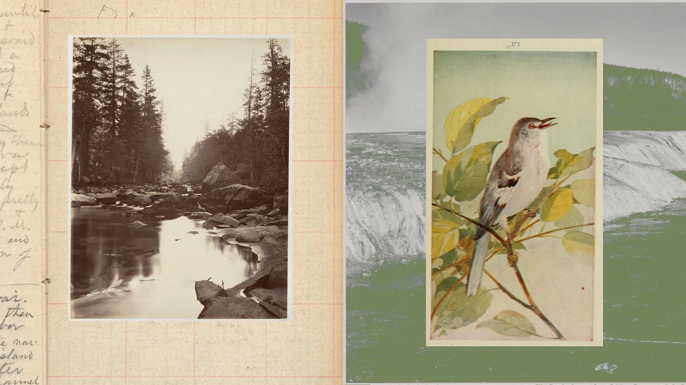
下载PDF 已发布 2026 年 11 月 5 日 团队 经济学 主题相关内容
- 社会影响 2026 年 5 月 27 日 社会科学中的编码智能体
阅读更多 Johannes Hermle, Ben Jones, Lukas Althoff, Ryan Heller, Thomas Lyttelton, Carolyn Stein, Nathan Wilmers, Maxim Massenkoff, Peter McCrory_ _报告主要作者
摘要
- 我们测量什么。 AI可以加速科学发现，但加速幅度取决于AI能做什么以及科学家如何使用它。借助隐私保护方法，我们研究了207,000次Claude和Claude Code科研会话，以了解Claude在各个科学领域和研究任务中的使用方式。我们开展这项研究，是为了帮助公众更好地理解当今AI用于科学的现状，并评估AI未来可能对科学发现产生的影响。
- 科学家在哪里使用Claude。 相对于各领域的研究人员数量，Claude在形式科学（如计算机科学、数学和统计学）中使用更多，在健康科学和以实验室为基础的物理科学中使用较少。科学家主要用Claude分析数据和写作。仅数据分析一项就约占Claude会话的三分之一、Claude Code会话的近一半。科学家较少将其用于想法产生和数据收集，尽管在配套调查中，他们把这些任务列为对科学发现最重要的任务。尽管如此，为科研工作设计的专用AI工具可能缩小科学家实际使用AI完成的研究任务与他们最看重任务之间的差距。例如，在Claude Science上，想法产生所占的使用份额约为Claude上的两倍。
- Claude使用如何跟随AI能力。 我们构建了一个度量，衡量AI在理论上能多好地完成每项研究任务。AI最胜任的任务（按该度量排名前20%）获得的Claude使用量，是研究人员投入时间所预测的两到四倍。AI最不擅长的任务（排名后20%，其中包括大多数体力工作）获得的使用量极少。我们在各领域观察到相同规律：AI能很好完成许多任务的领域（如计算机科学和统计学）使用Claude更多。
- 这对科学发现速度可能意味着什么。 借助一个简单模型，我们探究了AI能在多大程度上加速研究的情景。如果现有AI能力被广泛采用，某些领域的研究产出可能翻倍。如果AI能够承担所有非体力研究工作，计算机科学和统计学等领域产出最多可增长15倍，而受制于物理瓶颈的化学、生物学等实验台科学，产出将增长三到四倍。在我们对积极使用AI的研究人员的调查中，约40%的人预期AI模型到2030年能够独立完成完整的研究项目。
引言
科学被称为"无尽的前沿"（Bush 1945）。但我们探索这一前沿的速度，历来受制于一种稀缺资源：人类研究人员的时间与才智。人工智能可通过放大研究人员能做的事来缓解这一限制，从而改变发现的过程与探索的节奏（Wang et al. 2023; Amodei 2024）。鲜有AI应用能比这更关乎人类福祉。鉴于研究相较于经济中多数部门具有高度认知属性，AI在这一领域的影响可能尤为巨大且更早显现。 近期的例子显示，AI在科学发现中扮演着越来越重要的角色。在结构生物学中，AlphaFold预测了超过2亿种蛋白质的三维结构（Jumper et al. 2021; Varadi et al. 2024），其创造者共同获得了2024年诺贝尔化学奖。在材料科学中，GNoME预测出380,000种稳定的新晶体（Merchant et al. 2023）。在数学领域，研究人员已借助AI系统帮助解决数十年前的Erdős问题、为一个千禧年大奖难题给出潜在证明，并在其他重大问题上取得进展，从悬而未决的猜想到验证里程碑式的证明（Anthropic 2026a, 2026b; OpenAI 2026a, 2026b; Tsoukalas et al. 2026）。 除这些进展之外，大多数科学进步都涉及许多专门化、相互关联的研究任务，而这些任务在不同领域之间差异很大。AI能在多大程度上加速科学发现，不仅取决于AI的能力，也取决于这些任务对AI的采用情况。在本报告中，我们使用隐私保护基础设施研究Claude、Claude Code和Claude Science在科研中的使用。我们记录使用在领域与任务间的差异，找出解释这些使用模式的因素，并勾勒AI可能加速研究的情景。 Claude在科学中的使用因领域而异。相对于各自的研究人员数量，计算机科学、数学和统计学等形式科学使用Claude更多，而健康科学和以实验室为基础的物理科学使用较少。就研究任务而言，科学家更多用Claude分析数据和写作，较少用于收集数据或产生想法与假设。这与配套科学家调查中自我报告的AI使用情况一致。 为理解这些差异，我们构建了理论AI能力的度量。在该度量上得分更高的任务与领域，Claude使用量也更高。这些任务和领域往往在性质上更偏认知，也更适合强化学习——AI从反复尝试的反馈中学习。简言之，科学家似乎在AI最擅长之处使用AI。 基于这些发现，我们勾勒出AI可能加速科学进步的情景。以当前能力，某些领域的研究产出最多可翻倍，主要来自任务层面的增强。我们调查中的研究人员预期未来会出现强得多的能力。在一个AI完全自动化所有非体力工作的假设情景中，计算机科学或统计学等高度认知领域的产出最多可增长15倍。由于加速潜力最大的领域包含了那些产出AI本身的领域，这些收益可能形成额外的反馈循环：更快的AI研究产出更强的AI，而更强的AI又可能进一步加速研究。 尽管更快的科学发现可能给人类带来巨大益处，AI驱动的研究也伴随风险与不确定性。人类监督减少可能导致人们开展危险或不合伦理的研究。AI也可能重塑研究人员的职业生涯，使研究工作变得更有或更无回报，并改变人类追求知识所伴随的使命感。
我们如何开展这项研究
这项研究的目标是在保护科研工作细节的同时，衡量科学家使用Claude的不同方式。为此，我们使用隐私保护基础设施分析消费者套餐上Claude的科研使用。一个语言模型在此充当"分类器"，读取每段会话记录，并按预定义的分类体系（Alamos和Althoff 2026提出的SciNet分类体系）为其标注一组固定类别，例如所属领域和涉及的研究任务。由此得到的标签（如"化学"或"数据清洗"）是研究团队为本报告从这些对话中保留并分析的唯一信息。本研究中使用的任何分类器都不会提取或存储开放式信息或研究内容细节，例如研究数据集、假设、实验方法、早期发现或未发表论文。结果仅以汇总形式报告，且仅针对满足最少独立账户数量的单元。本研究引入的所有分类器均列于附录。 我们的测量分两步。第一个分类器判断一段会话记录是否涉及科研工作。第二个分类器再将每条记录归入SciNet分类体系中的领域、子领域和任务。SciNet包含7,262项任务，涵盖34个领域和318个子领域。分类体系中有些任务（如起草稿件）通用于所有领域，另一些则专属于特定领域或子领域。例如，在该体系中，预测光学吸收与发射光谱的任务专属于材料科学。这些任务合起来覆盖了产出新研究发现的全过程。 我们的主样本由2026年8月2日至9月30日消费者套餐上207,049次被标注了科学领域与研究任务的会话构成：其中128,914次来自Chat和Cowork这两个用于对话与知识工作的通用界面（下文统称"Claude"），78,135次来自Claude Code——一种直接处理用户文件、编写并运行代码的智能体编码工具。我们还研究了一个Claude Science会话的补充样本。样本构建细节见附录。 将使用数据与结构化的研究任务分类体系结合，使我们能够研究哪些领域采用Claude、以及用于研究过程的哪些环节。这项研究为日益增多的、试图衡量AI技术用于科学发现之采用情况的工作添砖加瓦（Kobak et al. 2025; Liang et al. 2025; Hao et al. 2026; Codreanu et al. 2026）。
Claude使用在各科学领域间的差异
我们先描述Claude使用在各科学领域间如何变化。图1将某领域的会话份额与该领域在全球研究人员中的份额相比较，由此看出各科学领域的相对使用强度。1 在Claude上，按会话份额计算的三大领域是计算机科学（11.9%）、工程学（8.4%）和医学（7.7%），它们在全球研究人员数量上也位居前列。2 总体而言，研究人员份额更大的领域，往往也占据更大的Claude会话份额（对数-对数相关系数为0.79）。
然而，各领域的Claude使用不能仅用研究人员数量解释。在图1中，位于45度线上方的领域相对其规模使用量更高，线下方的领域使用量更低。相对使用量在形式科学中尤其高，包括计算机科学、数学和统计学；社会科学的使用量也高。相比之下，化学等常在实验室开展工作的物理科学，相对使用量往往较低。按会话量计的第三大领域医学同样如此，其研究人员把大量时间花在患者身上。
在Claude Code上，使用量与领域规模的关系较弱（与研究人员数量的对数-对数相关系数为0.62），且集中于更偏定量的领域。尽管计算机科学仅占全球研究人员的4.3%，却独占了Claude Code会话的32.7%。3 数学和统计学等其他形式科学的相对使用量也高。艺术与人文学科以及社会科学的相对使用量较低，例外是经济学这一相对偏定量的领域。
 Claude在各科学领域的使用。 每个点代表一个领域。横轴显示该领域的研究人员份额，纵轴显示该领域的研究会话份额，两者均采用对数刻度。上图为Claude的会话，下图为Claude Code的会话。
在比较这34个领域内318个子领域的使用情况时，我们观察到类似规律（图2）。4 这一更细粒度的子领域视角显示，人工智能与机器学习格外突出，其会话份额在Claude上为5.0%、在Claude Code上为15.2%，尽管它只占全球研究人员的1.2%。更一般地，无论所属的科学大类为何，计算类子领域都在采用最积极者之列，包括计算生物学、计算语言学和计算神经科学。机器人学的相对使用量也高，可能是因为它虽聚焦物理系统，却大量建立在计算方法之上。
Claude在各科学领域的使用。 每个点代表一个领域。横轴显示该领域的研究人员份额，纵轴显示该领域的研究会话份额，两者均采用对数刻度。上图为Claude的会话，下图为Claude Code的会话。
在比较这34个领域内318个子领域的使用情况时，我们观察到类似规律（图2）。4 这一更细粒度的子领域视角显示，人工智能与机器学习格外突出，其会话份额在Claude上为5.0%、在Claude Code上为15.2%，尽管它只占全球研究人员的1.2%。更一般地，无论所属的科学大类为何，计算类子领域都在采用最积极者之列，包括计算生物学、计算语言学和计算神经科学。机器人学的相对使用量也高，可能是因为它虽聚焦物理系统，却大量建立在计算方法之上。
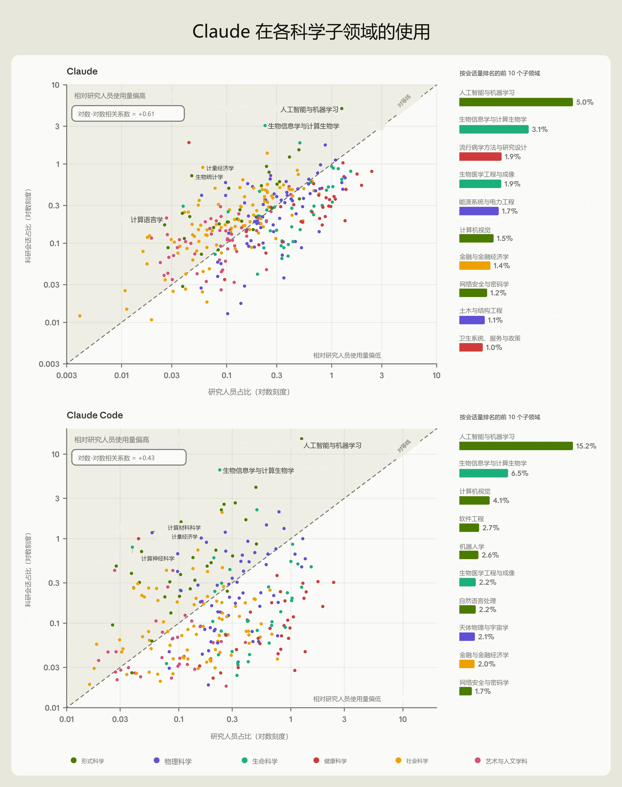
Claude在各科学子领域的使用。 每个点代表一个子领域。横轴显示该子领域的研究人员份额，纵轴显示该子领域的研究会话份额，两者均采用对数刻度。上图为Claude的会话，下图为Claude Code的会话。出于隐私原因，账户数量过少的子领域不予显示。Claude使用在各研究任务间的差异
除了弄清哪些领域使用Claude，我们还想知道科学家用它做什么。研究涉及许多不同任务，从产生假设、分析数据，到把发现写成研究论文。为更清楚地辨明Claude如何支持科学发现，我们研究使用量在这些任务间如何变化。为此，我们把每段会话归入SciNet的7,262项任务之一。这些任务有的通用于所有领域（如起草稿件），有的专属于特定领域或子领域（如进行差异基因表达分析以比较肿瘤亚型，这一任务与癌症生物学相关）。该分类体系区分研究任务（研究人员为产出新科学发现而执行的任务）与非研究任务（如教学、同行评审，以及对院系或领域的服务）。5 我们把分析限定在涵盖八大类的研究任务：(1)数据分析，(2)写作与传播，(3)数据收集，(4)阅读与知识获取，(5)理论分析，(6)设计与开发（软件、材料与创意作品），(7)构思与假设产生，(8)其他（如研究管理）。
对每个任务类别，我们分别计算它在Claude和Claude Code会话中的份额。为判断某一类别的使用量是高是低，我们参考SciNet估计的研究人员通常花在该类别上的时间份额。这些时间估计基于一个LLM分类器，并用记录每项任务所花研究人员时间的湿实验室研究方案，以及数千篇学术论文中任务的出现频次加以验证（见附录）。这提供了一个基准，用以评估不同任务类别间的Claude使用份额是遵循还是偏离研究人员的时间分配。
按任务类别的使用。 数据分析任务的绝对使用量最高，且相对研究人员时间占比偏高。数据分析占Claude会话的33.7%、Claude Code会话的48.1%，而研究人员时间占比为27.6%。写作与传播任务的使用量也高，尤其在Claude上（32.0%，而研究人员时间占比为16.0%）。6 数据收集任务的相对使用量低，占研究人员时间的28.6%，却只占Claude会话的11.5%和Claude Code会话的11.9%。对于存在物理障碍的任务（如临床或生化数据的采集），数据收集的低代表性尤为明显。可依赖更多数字化流程的数据收集任务（如检索档案文档或文本）低代表性较轻，而纯数字化的数据收集任务（如采集在线数据）则可能偏高。构思与假设产生任务的使用量也低，占Claude会话的4.2%和Claude Code会话的2.1%，而研究人员时间占比为7.1%。
 Claude按科研任务类别的使用。 每一行代表八大任务类别之一。橙色条表示Claude科研会话投入各类别的份额，蓝色条表示Claude Code科研会话的相应份额。黑线表示依据SciNet计算的研究时间估计份额（见附录）。
将观测使用与调查证据对照。 除对Claude和Claude Code会话的分析外，我们还对528名科学家开展了调查，其自我报告的AI使用情况与我们在会话中观察到的规律一致。样本主要由生命与健康科学领域、积极采用AI的研究人员构成。7 与图3所示的Claude使用规律一致，受访者自我报告的AI使用在数据分析、写作与传播上最高，在构思与假设产生、数据收集上较低。受访者还报告，在数据分析、写作与传播上更多采用共享或委托式的AI使用（图4）。
调查还询问哪些类别对产出重要研究成果最关键。受访者把构思与假设产生列为第一、数据收集列为第二。值得注意的是，这些类别在自我报告的使用以及Claude会话中都偏低。造成这种低代表性的原因可能各不相同：数据收集大多属于体力工作，而构思不是。就构思而言，科学家可能更愿意自己产生想法，或者认为AI能力有限。我们的数据也可能低估了构思，因为它往往交织在许多其他研究任务中、难以归类。但AI在高层构思上或许确实更弱，例如选择研究哪个问题，并设计研究来回答它。
Claude按科研任务类别的使用。 每一行代表八大任务类别之一。橙色条表示Claude科研会话投入各类别的份额，蓝色条表示Claude Code科研会话的相应份额。黑线表示依据SciNet计算的研究时间估计份额（见附录）。
将观测使用与调查证据对照。 除对Claude和Claude Code会话的分析外，我们还对528名科学家开展了调查，其自我报告的AI使用情况与我们在会话中观察到的规律一致。样本主要由生命与健康科学领域、积极采用AI的研究人员构成。7 与图3所示的Claude使用规律一致，受访者自我报告的AI使用在数据分析、写作与传播上最高，在构思与假设产生、数据收集上较低。受访者还报告，在数据分析、写作与传播上更多采用共享或委托式的AI使用（图4）。
调查还询问哪些类别对产出重要研究成果最关键。受访者把构思与假设产生列为第一、数据收集列为第二。值得注意的是，这些类别在自我报告的使用以及Claude会话中都偏低。造成这种低代表性的原因可能各不相同：数据收集大多属于体力工作，而构思不是。就构思而言，科学家可能更愿意自己产生想法，或者认为AI能力有限。我们的数据也可能低估了构思，因为它往往交织在许多其他研究任务中、难以归类。但AI在高层构思上或许确实更弱，例如选择研究哪个问题，并设计研究来回答它。
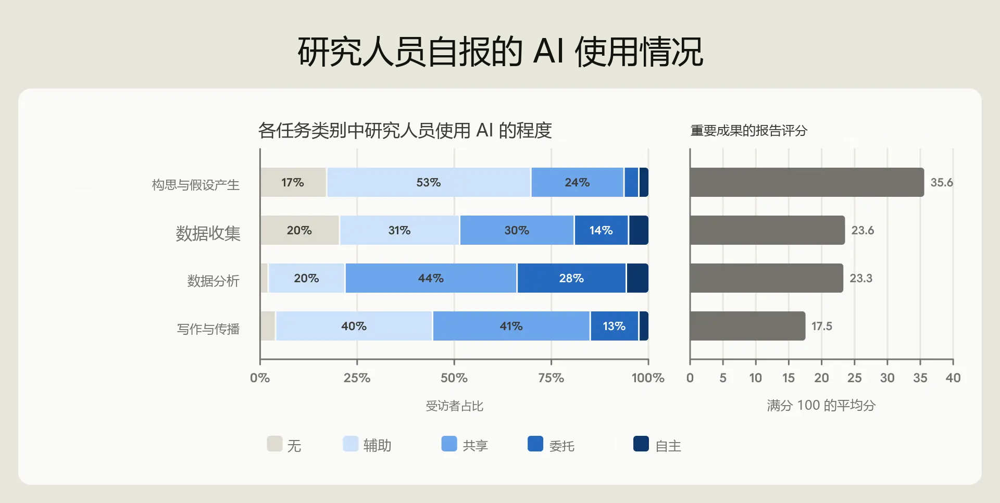
研究人员报告的AI使用。 左图显示四类研究任务中，处于从"无"到"自主"各AI使用层级的受访者百分比。右图显示受访者如何评价每一类别对产出重要研究成果的重要性（在四个类别之间分配100分）。 Claude Science在生物学与生物医学上的使用。 尽管Claude和Claude Code是通用界面，面向科学的专用AI工具正日益普及。为研究这类工具是否支持更专门、更高要求的研究，我们用隐私保护分析基础设施，比较Claude Science上的生物学与生物医学工作与Claude、Claude Code上的同类工作。 Claude Science把Claude连接到许多原本彼此分散的研究工具与数据库，起到整合并加速科研工作流的作用。科学家往往必须使用不同平台（各有独特的数据结构或查询语言）来把不同的工具与数据库组合进自己的研究。例如，研究现有药物是否能作用于某一特定蛋白质的生物学家，通常必须分别查询关于该蛋白质功能、结构、已针对其测试过的化合物，以及相关药物试验或论文的多个数据库。Claude Science把这些整合进一条工作流。 Claude Science的使用集中于生命科学。前两大领域是生物医学科学与生物学，两者合计占会话的50%以上。在这些领域内，我们评估哪些任务相对Claude所执行的任务最为偏高。 我们发现，研究人员在Claude Science上使用的任务比在Claude上更专门（图5）。例如，"为蛋白质–蛋白质或蛋白质–配体相互作用提出机制模型"这一任务在Claude Science上出现的可能性是Claude上的5.6倍。该任务涉及在单个分子接触的层面上解释一种蛋白质如何与另一种蛋白质或与药物之类的小分子结合。Claude Science很适合这项任务，因为它能从多个相连的数据库收集蛋白质结构与结合数据，并把它们组合成可检验的相互作用模型。相比之下，Claude Science较少用于起草稿件或与协作者协调等通用任务。此外，我们发现构思与假设产生占Claude Science会话的8%，与这些任务所占的研究人员时间份额大致相当，说明面向科学的专用AI工具能够促成更复杂、更有创造性的工作。 Claude Science在各领域与任务上的使用。 上图显示按全部Claude Science科研会话份额排名的前10个领域。下图专门显示在生物学与生物医学内，Claude Science相对Claude最典型与最不典型的任务，计算方式为：（该任务在这些领域的Claude Science科研会话中的份额）/（其在这些领域的Claude科研会话中的份额）。
聚焦生物医学科学与生物学，并采用我们此前工作（Appel et al. 2026）提出的经济原语框架中的度量，我们发现Claude Science上的任务比Claude和Claude Code上的更长、更复杂，且执行得更自主（图6）。这与专用AI工具被用于更高要求任务的情况相符。8 Claude Science会话所含的工作，若不用AI完成，所需人力工时接近Claude和Claude Code会话的两倍。这些会话的内容也更进阶。据估计，超过80%的Claude Science使用需要博士层级训练（20年教育），而其他界面约为50–70%。超过70%的Claude Science会话以高度AI自主性执行，远高于Claude（23.7%），也略高于Claude Code（64.1%）。
Claude Science在各领域与任务上的使用。 上图显示按全部Claude Science科研会话份额排名的前10个领域。下图专门显示在生物学与生物医学内，Claude Science相对Claude最典型与最不典型的任务，计算方式为：（该任务在这些领域的Claude Science科研会话中的份额）/（其在这些领域的Claude科研会话中的份额）。
聚焦生物医学科学与生物学，并采用我们此前工作（Appel et al. 2026）提出的经济原语框架中的度量，我们发现Claude Science上的任务比Claude和Claude Code上的更长、更复杂，且执行得更自主（图6）。这与专用AI工具被用于更高要求任务的情况相符。8 Claude Science会话所含的工作，若不用AI完成，所需人力工时接近Claude和Claude Code会话的两倍。这些会话的内容也更进阶。据估计，超过80%的Claude Science使用需要博士层级训练（20年教育），而其他界面约为50–70%。超过70%的Claude Science会话以高度AI自主性执行，远高于Claude（23.7%），也略高于Claude Code（64.1%）。
 生物学与生物医学中的使用特征。 比较在生物学与生物医学内，Claude、Claude Code和Claude Science上完成任务的人类任务时间、博士层级内容与自主程度。斜纹的橙色与蓝色条对Claude和Claude Code所执行的子领域与任务重新加权，使之与Claude Science所执行的相匹配。
Claude使用的产出。 最后，用Claude产出的成果在各领域间呈现明显差异（图7）。9 文档、报告或学术论文等书面成果，相对自然与形式科学而言，在社会科学与人文学科中更常见；反之，代码、软件输出与数据等技术成果，在自然与形式科学中更频繁。就产出成果而言，健康科学总体更接近社会科学。技术成果在Claude Code上的常见程度约为Claude上的两倍，但各领域间的总体规律相似（见附录）。
生物学与生物医学中的使用特征。 比较在生物学与生物医学内，Claude、Claude Code和Claude Science上完成任务的人类任务时间、博士层级内容与自主程度。斜纹的橙色与蓝色条对Claude和Claude Code所执行的子领域与任务重新加权，使之与Claude Science所执行的相匹配。
Claude使用的产出。 最后，用Claude产出的成果在各领域间呈现明显差异（图7）。9 文档、报告或学术论文等书面成果，相对自然与形式科学而言，在社会科学与人文学科中更常见；反之，代码、软件输出与数据等技术成果，在自然与形式科学中更频繁。就产出成果而言，健康科学总体更接近社会科学。技术成果在Claude Code上的常见程度约为Claude上的两倍，但各领域间的总体规律相似（见附录）。
 Claude产出的成果。 按领域划分，Claude上产出书面成果与技术成果的会话份额。各领域按书面成果份额与技术成果份额之差排序。
Claude产出的成果。 按领域划分，Claude上产出书面成果与技术成果的会话份额。各领域按书面成果份额与技术成果份额之差排序。
使用如何与能力相关
AI使用是否跟随AI能力？领域规模能解释Claude使用差异的一部分，但并非全部。例如，计算机科学研究人员使用Claude的程度远超该领域规模所预测，而营养学研究人员使用得远少于预测。同样，研究人员把自身时间花在哪里，也不能完全预测他们在哪里使用Claude最多。某些宽泛任务类别（如数据分析与写作）的使用份额远大于其研究时间份额，而另一些类别（如数据收集、构思与假设产生）的份额则小得多。在这里，我们检验这些使用差异是否反映了AI实际能做什么。
为衡量特定任务的AI能力，我们首先用LLM分类器构建能力分数。对每项任务，SciNet给出科学家完成任务所需执行的一系列单独步骤。例如，在化学中，一项任务涉及纯化反应混合物，该任务的步骤之一是装填色谱柱。分类器会看到分类体系中成对出现的步骤，并被问及AI能把其中哪一个做得更好。我们用Bradley–Terry模型汇总这些比较——正是这一模型支撑了依据对弈结果给棋手排名的Elo等级分。一个步骤在比较中胜出则分数上升，落败则下降。随后我们对每项任务的步骤取平均，得到任务层级的分数（细节见附录）。我们把这一度量称为_理论AI能力_，把某项任务的具体分数称为其_AI能力分数_。
为比较各任务间的使用，我们考察某项任务的Claude使用相对于研究人员在该任务上所花时间是更高还是更低。例如，一项占研究人员时间5%却占Claude会话10%的任务，其使用量是预期的两倍，比值为2。比值为1表示Claude使用与研究人员在该任务上所花时间相符。比值低于1表示，按该任务所占研究人员时间衡量，Claude的使用低于预期。
图8显示，这一使用比值随任务AI能力分数急剧上升。对能力分数最低20%的任务（如纯化反应混合物、进行参与式观察），Claude几乎不被使用。在能力分数中位数处，比值约为1，因此使用量与研究人员时间相符。对能力分数最高20%的任务（如可视化数据、应用统计检验），与研究人员通常花在这些任务上的时间相比，Claude上的使用约高两倍，Claude Code上约高四倍。这些规律说明，科学家对Claude的使用紧密跟随AI能力分数。Claude Code的斜率更陡，反映出它聚焦计算类工作，而这类工作的能力分数更高。
 Claude使用与理论AI能力。 纵轴表示各能力五分位组中任务的使用比值，计算方式为投入这些任务的研究会话份额除以据SciNet估计的研究时间份额。横轴表示任务的AI能力分数（百分位）。橙色点表示Claude上各AI能力五分位组任务的平均使用比值，蓝色点表示Claude Code上的相应数值。
理论AI能力可能因多种原因而在任务间不同。为理解这些差异，我们把每项任务的AI能力分数与三组由LLM得出的任务特征关联起来：其对强化学习（RL）的适配性；工作以认知、人际还是体力为主；以及监管限制是否制约AI使用（图9；定义与数据来源见附录）。
先看RL适配性。在RL中，AI模型反复尝试一项任务，成功时获得奖励，从而学会执行该任务。当成功易于验证、大量样本可在计算环境中模拟、反馈能快速给出时，任务尤其适合RL（Lambert et al. 2024; Guo et al. 2025）。我们用SciNet中针对这三个RL相关成分的任务级度量，把它们汇总为一个单一指数。任务的能力分数与其RL指数分数高度相关（后者是单独分类得到的，相关系数为0.78）。这说明AI在最易应用RL的研究任务上能力最强。
其他重要任务特征关乎工作的性质。有些研究任务本质上是认知性的，另一些则需要体力动作或人际接触。一般而言，体力任务超出纯认知机器的能力范围。还可能有限制AI使用的监管约束。以认知工作为特征的任务，AI能力分数更高（相关系数0.69）。相比之下，包含更多体力工作的研究任务AI能力分数更低（−0.57）。包含人际工作（−0.31）或涉及AI使用监管限制（−0.38）的研究活动，分数也往往更低。
Claude使用与理论AI能力。 纵轴表示各能力五分位组中任务的使用比值，计算方式为投入这些任务的研究会话份额除以据SciNet估计的研究时间份额。横轴表示任务的AI能力分数（百分位）。橙色点表示Claude上各AI能力五分位组任务的平均使用比值，蓝色点表示Claude Code上的相应数值。
理论AI能力可能因多种原因而在任务间不同。为理解这些差异，我们把每项任务的AI能力分数与三组由LLM得出的任务特征关联起来：其对强化学习（RL）的适配性；工作以认知、人际还是体力为主；以及监管限制是否制约AI使用（图9；定义与数据来源见附录）。
先看RL适配性。在RL中，AI模型反复尝试一项任务，成功时获得奖励，从而学会执行该任务。当成功易于验证、大量样本可在计算环境中模拟、反馈能快速给出时，任务尤其适合RL（Lambert et al. 2024; Guo et al. 2025）。我们用SciNet中针对这三个RL相关成分的任务级度量，把它们汇总为一个单一指数。任务的能力分数与其RL指数分数高度相关（后者是单独分类得到的，相关系数为0.78）。这说明AI在最易应用RL的研究任务上能力最强。
其他重要任务特征关乎工作的性质。有些研究任务本质上是认知性的，另一些则需要体力动作或人际接触。一般而言，体力任务超出纯认知机器的能力范围。还可能有限制AI使用的监管约束。以认知工作为特征的任务，AI能力分数更高（相关系数0.69）。相比之下，包含更多体力工作的研究任务AI能力分数更低（−0.57）。包含人际工作（−0.31）或涉及AI使用监管限制（−0.38）的研究活动，分数也往往更低。
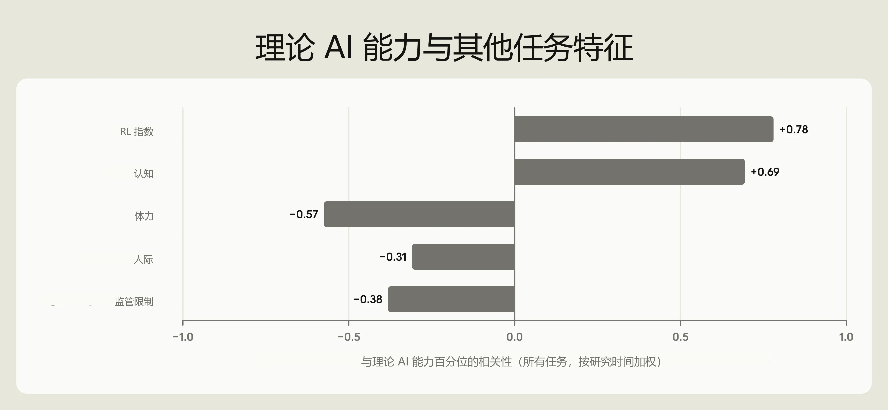
理论AI能力与其他任务特征。 研究任务的AI能力分数百分位与该任务其他特征之间的相关性。 同样的任务特征也能预测研究人员在某一给定任务上使用Claude的程度（图10）。对RL适配性处于最低五分之一的任务，Claude几乎不被使用。对处于最高五分之一的任务，相对于研究人员所花时间，Claude使用高得不成比例：Claude上高两倍，Claude Code上高四倍。这与Claude使用同AI能力分数总体上的关联相似——那里最高20%的任务同样吸引了预期使用量两到四倍的使用。 在以认知为主的任务上，Claude使用也高得不成比例。相比之下，体力与人际任务上Claude使用量低。在监管壁垒限制AI辅助的任务上，Claude使用也较低。总体而言，在高度专门化的研究任务谱系中，使用度量与能力度量紧密相关。 Claude使用与任务特征。 每个面板考察一种不同的任务特征。纵轴表示在该特征上得分不同的任务组（"分箱"）的使用比值，横轴表示该特征强度的度量。橙色点表示Claude上各分箱任务的平均使用比值，蓝色点表示Claude Code上的相应数值。位于零处的点表示因负责该使用的账户过少、出于隐私而隐去的分箱。
不同科学领域依赖不同的研究活动组合。细分研究任务上使用量与能力分数的相关性，能否解释为何有些领域使用Claude更多？我们的数据显示可以：某子领域每名研究人员的Claude使用量，往往随其任务平均AI能力分数上升而提高（Claude相关系数为0.45，Claude Code为0.57），如图11所示。
各学科大类之间也存在显著差异，说明Claude使用受AI能力之外因素的影响。与自身任务的AI能力分数相比，健康科学研究人员使用Claude相对偏少，可能是因为医疗数据与研究的监管限制了AI的使用、或使其更难整合。形式科学、社会科学以及艺术与人文学科的研究人员，使用Claude的程度高于AI能力分数的预测。这些领域的大量工作通过文本与代码完成，这很可能促进了AI工具的采用。物理科学与生命科学中的Claude使用总体上更贴合AI能力分数，尽管个别子领域可能偏离。
Claude使用与任务特征。 每个面板考察一种不同的任务特征。纵轴表示在该特征上得分不同的任务组（"分箱"）的使用比值，横轴表示该特征强度的度量。橙色点表示Claude上各分箱任务的平均使用比值，蓝色点表示Claude Code上的相应数值。位于零处的点表示因负责该使用的账户过少、出于隐私而隐去的分箱。
不同科学领域依赖不同的研究活动组合。细分研究任务上使用量与能力分数的相关性，能否解释为何有些领域使用Claude更多？我们的数据显示可以：某子领域每名研究人员的Claude使用量，往往随其任务平均AI能力分数上升而提高（Claude相关系数为0.45，Claude Code为0.57），如图11所示。
各学科大类之间也存在显著差异，说明Claude使用受AI能力之外因素的影响。与自身任务的AI能力分数相比，健康科学研究人员使用Claude相对偏少，可能是因为医疗数据与研究的监管限制了AI的使用、或使其更难整合。形式科学、社会科学以及艺术与人文学科的研究人员，使用Claude的程度高于AI能力分数的预测。这些领域的大量工作通过文本与代码完成，这很可能促进了AI工具的采用。物理科学与生命科学中的Claude使用总体上更贴合AI能力分数，尽管个别子领域可能偏离。
 各子领域的Claude使用与理论AI能力。 两个面板都把每个子领域表示为一个点，大小按该子领域的研究人员数量确定。纵轴以对数刻度显示每名研究人员的使用量，其计算方式为该子领域的研究会话份额除以该子领域在全部研究人员中的份额。横轴显示子领域的AI能力分数，通过按研究人员工时加权、汇总该子领域所有研究任务得出。黑线表示最佳拟合，每个面板报告按子领域规模加权的相关系数。左图显示Claude上科研会话的结果，右图显示Claude Code上科研会话的结果。
理论AI能力还能预测研究人员在多大程度上允许Claude自主工作。图12显示，自主式使用与子领域的理论AI能力相关。换言之，理论AI能力更高的子领域不仅使用AI更多，而且以更自主的方式使用。
各子领域的Claude使用与理论AI能力。 两个面板都把每个子领域表示为一个点，大小按该子领域的研究人员数量确定。纵轴以对数刻度显示每名研究人员的使用量，其计算方式为该子领域的研究会话份额除以该子领域在全部研究人员中的份额。横轴显示子领域的AI能力分数，通过按研究人员工时加权、汇总该子领域所有研究任务得出。黑线表示最佳拟合，每个面板报告按子领域规模加权的相关系数。左图显示Claude上科研会话的结果，右图显示Claude Code上科研会话的结果。
理论AI能力还能预测研究人员在多大程度上允许Claude自主工作。图12显示，自主式使用与子领域的理论AI能力相关。换言之，理论AI能力更高的子领域不仅使用AI更多，而且以更自主的方式使用。
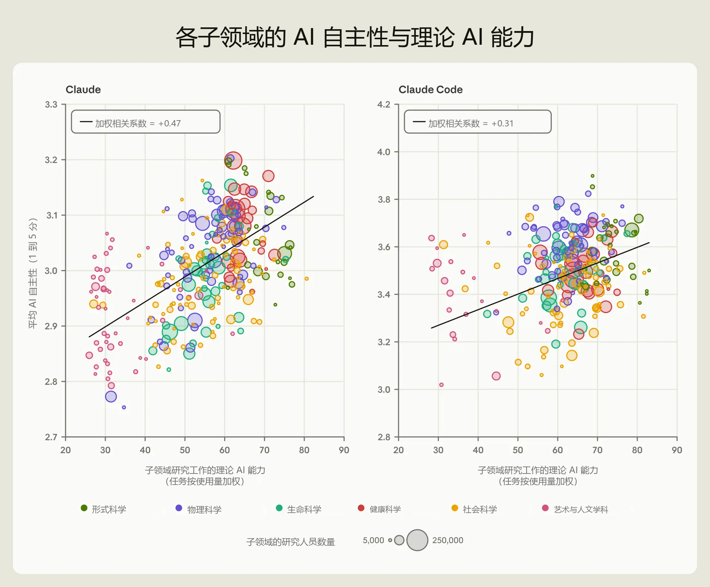
各子领域的AI自主性与理论AI能力。 两个面板都把每个子领域表示为一个点，大小按该子领域的研究人员数量确定。左图代表Claude上的科研会话，右图代表Claude Code上的科研会话。纵轴显示该子领域会话按会话量加权的平均自主性分数。横轴显示该子领域任务的平均理论能力，同样按使用量加权。未被任何会话覆盖的任务被排除在分析之外，因为无法对其自主性评分。为便于阅读，离群子领域已略去，但仍在最佳拟合线与相关系数计算中纳入。相关系数按子领域规模加权。借助AI加速研究的情景
科学与技术进步的速度取决于好想法以及实现这些想法的手段。历来，两者都受人类能力所限。研究人员数量有限，每人的时间也有限，要用于提出假设、设计恰当的检验、运行分析并综合研究发现。 AI可通过两种方式缓解这些约束。其一，它可以承担研究人员目前所做的工作，使他们能探索更多想法。其二，它可以贡献研究人员原本可能无法想到的想法。第二种最终可能最为重要，但难以衡量得多，因此我们的分析聚焦第一种。
方法
我们考虑通过AI实现科学加速的三种情景。情景1假设当前AI能力被广泛采用，其估计来自我们的调查与AI能力分数。情景2和3是假设性的未来：AI完全自动化75%或100%的非体力研究步骤（即构成SciNet中每项研究任务的单个动作），从AI能力分数最高的步骤开始。在所有三种情景中，研究人员仍继续执行体力步骤。这些是说明性情景，而非预测。它们展示体力工作、理论AI能力与AI成本会如何塑造科学研究的加速，以及哪些领域可能加速最多。 对每种情景，我们报告两个度量。第一个是_AI份额_：在一项研究中AI能够承担的研究人员时间所占比例。按研究人员目前的时间分配，它衡量AI能释放多少人类研究时间，直接由上文分析得出。研究人员可以把释放出的时间转用于其他工作，从而提高研究产出。我们的第二个度量_加速_估计这一收益：在固定研究预算下，相对无AI时研究产出的增幅。它告诉我们同样预算能多产出多少研究成果。释放出的时间并不会一对一转化为更多产出，既因为研究人员把精力转向AI帮助较少的任务，也因为AI本身有成本。 我们从调查构建情景1的AI份额，该调查记录了五级AI使用：无、辅助、共享、委托、自主。我们假定这五级分别对应AI承担某一给定任务步骤中研究人员时间的0%、25%、50%、75%和100%。在每个任务类别内，我们按AI能力分数给任务步骤排序，再按调查所报告的比例把AI使用层级分配给各任务步骤，最高层级分给得分最高的步骤。以构思与假设产生为例，17%的回复报告不使用AI，53%报告辅助式使用。因此，AI能力分数最低的17%构思任务步骤被赋予零AI份额，接下来的53%被赋予25%，依此类推逐级向上。由于受访者很可能是重度AI采用者，我们把其报告的使用视作AI当下能力所及的替代指标。最后，我们把AI释放的研究人员时间从步骤汇总到领域（见附录）。 为计算加速，我们使用想法生产函数——一个把研究人员时间等研究投入转化为研究产出的标准经济模型。在该模型中，一篇论文需要许多研究任务（Jones 2026）。这些任务互为补充，因而某一环节的强项无法完全弥补另一环节的弱项。随着AI让某些任务变得更廉价，研究人员把精力转向AI帮助较少的任务，从而缓解限制总体收益的瓶颈。例如，研究人员可以花更多时间提出新问题，或开展更多体力实验以扩充实证证据。我们依据Ahmadpoor和Jones（2019）校准这些瓶颈在多大程度上限制总体收益。关于AI成本，我们假定一小时AI智能体时间花费30美元，而一小时研究人员时间为95美元，且AI每节省一研究人员小时需运行0.2小时。这些是说明性假设：AI成本采用当今公开标价。如下文所述，这些成本越低，给定预算内能完成的研究越多，加速也越大。附录描述了模型与假设。
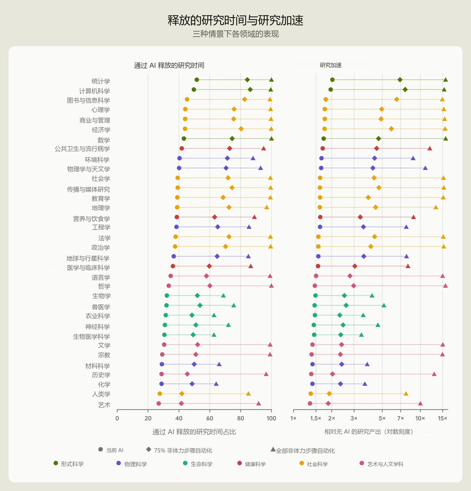
AI释放的研究时间与研究加速。 每一行是一个领域。左图按AI可承担的研究人员时间估计份额给领域排序。圆圈表示当前能力的估计；菱形表示若75%非体力步骤自动化所释放的时间份额估计；三角形表示若100%非体力步骤自动化所释放的时间份额估计。右图显示给定领域研究预算下的研究加速，其横轴以无AI产出为基准（1倍＝无变化）显示三种情景下有AI时研究产出的倍数。情景1：当前能力
以当前能力，若被广泛采用，AI可承担产出一项新研究所需研究人员时间的27–52%，各领域中位数为38%（图13左图）。这些份额意味着研究加速从艺术的1.35倍、人类学的1.36倍、化学的1.41倍，到计算机科学的1.96倍和统计学的2.02倍不等（图13右图）。加速之所以有限，是因为当今AI工作多为辅助式或共享式而非自主式，研究人员在几乎每个步骤上仍需投入大量时间。即便工作几乎完全属认知性、对AI准备最充分的领域，也仅达到约2倍加速。这些估计假定AI广泛扩散，且研究人员把它应用于当下有用的每一个步骤。
有两个因素解释了领域间的大部分差异。第一个是体力工作，没有物理集成，AI无法承担。在农业科学、生物医学科学、化学和材料科学等实验室与野外科学中，38–41%的研究人员时间用于体力步骤，而中位领域仅为4%。仅体力份额一项就解释了AI份额差异的约三分之一。第二个因素是认知工作内部AI能力分数的分布。艺术与历史花在体力步骤上的时间很少（分别为10%和4%），但其认知步骤的AI能力分数低，或许因为定性与阐释性工作较不适合强化学习。相比之下，计算机科学与统计学分数高、AI份额大，由数据分析驱动——这是各领域中AI能力分数最高的一类工作。
在Claude上使用比值更高的领域，往往也有更大的AI份额（图14）。AI份额的计算完全未用任何Claude使用数据，因此这一关系进一步证明AI使用跟随理论AI能力。
 各领域的Claude使用与AI释放的研究时间。 观测到的Claude使用与各领域AI份额之间的相关性。每个领域是一个点，大小按研究人员数量确定。纵轴以对数刻度显示该领域在Claude上的使用比值，横轴显示以当前能力AI可完成的人类研究时间估计份额。
各领域的Claude使用与AI释放的研究时间。 观测到的Claude使用与各领域AI份额之间的相关性。每个领域是一个点，大小按研究人员数量确定。纵轴以对数刻度显示该领域在Claude上的使用比值，横轴显示以当前能力AI可完成的人类研究时间估计份额。
情景2和3：更大程度的自动化
在这些更偏推测性、且在很大程度上取决于对AI能力范围与成本之假设的情景中，更大程度的自动化使AI份额与加速都急剧上升，并拉大领域间差异。 在情景2中，75%的非体力步骤可由AI完成，计算机科学的加速约达8倍，统计学与图书馆及信息科学约7倍，经济学约6倍。多数其他社会科学、数学以及物理与天文学达到4–5倍，而实验台科学与医学科学约2–3倍。实验台科学与艺术及人文学科收益最小，但原因不同：在实验台科学中，大量工作属体力性质，仍须由研究人员完成；在艺术与人文学科中，工作多为认知性但AI能力分数低，因此其步骤中很少落入被自动化之列。自动化步骤在计算机科学中占非体力研究人员时间的82%，在艺术中仅占28%。历史、人类学与艺术的加速约为2倍或更低。 在情景3中，艺术与人文学科后来居上，而实验台科学仍受掣肘。一旦AI自动化全部非体力步骤，低AI能力分数不再限制认知工作，AI可以在许多领域承担近乎全部研究工作（图13左图）。在这一推测性情景中，体力任务少的领域（包括统计学、计算机科学、经济学、数学、心理学，以及多数社会科学与艺术及人文学科）达到约15–16倍。拥有大量实验室或野外工作的领域（如生物学、化学、材料科学、农业科学、生物医学科学）仅达3–4倍。在缺乏自动化实验室的情况下，其体力步骤（约占研究人员时间的40%）仍是瓶颈。 从这些情景可得出两点启示。第一，体力瓶颈依然强大。没有物理集成AI便无法执行的步骤，会在研究人员时间与预算中占据主导，给加速设下上限。第二，在不存在此类瓶颈之处，非同寻常的进展速度成为可能，而AI成本成为限制。在我们的假设下，一项被AI完全自动化的任务，其成本仍约为研究人员亲自执行成本的十六分之一，因此加速趋近约16倍便止步于此。更低的AI成本会按比例抬高这一上限，例如把AI成本减半就会使进展速度翻倍。如果成本大幅下降，包括对AI较晚才自动化的更难任务，那么没有体力瓶颈的领域可能加速到远超这些估计。 这些计算有若干重要局限，其影响会朝两个方向显现。我们没有考虑领域层面而非研究团队层面的约束，例如在大型强子对撞机这类设施上能同时运行的实验数量有限。我们也只计入研究人员与AI时间的成本，未计入实验机械或物料成本，而这些在健康、物理与生命科学中可能相当可观。我们同样未考虑用模拟替代体力实验，这本可缓解某些领域的瓶颈。最后，我们未考虑想法的质量。若AI能识别出成功概率更高的更好假设，研究可能进一步加速；若研究品味仍为人类所独有，加速则会更慢。
研究人员的预期
上述情景刻画了一系列可能性。研究人员自身的预期能提供以专业经验为根基的独特指引。为收集其观点，我们对生命与健康科学研究人员的调查询问：他们认为AI在独立工作时，何时能在不同类别的研究工作上比肩本领域最优秀的研究人员（图15）。受访者的近期预期很高：超过半数预期AI到2027年能在数据分析上比肩顶尖研究人员，38%表示AI已达到这一水平。到2030年，94%预期AI将在数据分析上比肩最优秀的研究人员，写作上为89%，构思与数据收集各为72%。对构思与数据收集的预期较低，与如今Claude在这些任务上使用较少相一致。
对无人在环的端到端AI研究，预期更为保守，但研究人员仍预期会有显著进展。约40%的受访者预期AI到2030年能开展完整研究项目，到2035年约64%，不过16%表示这永远不会发生。对AI自主产出科学突破的预期更为谨慎，约半数研究人员认为这要到2035年之后才会出现（如果会出现的话）。总体而言，许多研究人员预期未来十年将出现高度自动化，与我们的更大程度自动化情景大体一致。这些预期以多快速度、在多大程度上实现，不仅取决于AI作为软件技术的进步，也取决于为克服物理障碍而建设自动化实验室的努力。
把过去的调查证据与实际结果对照可见，AI进展常被大幅低估（Rosenberg et al. 2026）。例如，在2022年年中的一项调查中，领域专家对AI在国际数学奥林匹克达到金牌水平的中位估计是2030年，超级预测者则是2035年（Karger et al. 2023）。AI在2025年达成这一里程碑，比那些预测提前了约五到十年。尽管预测者系统性地低估了AI能力的进展，也存在少数例外，主要出现在需要在物理世界中执行的领域，例如生物学中AI辅助的实验室任务。
 研究人员预期AI何时比肩本领域最优秀的研究人员。 结果来自我们自己的调查。上面四行对应研究人员预期AI独立工作、在不同任务类别上比肩本领域最优秀研究人员的时间。下面两行对应研究人员预期AI在没有人类科学家参与的情况下，完成"从问题到发现"、并在各自领域产出"本领域会视为重大进展的发现"的时间。
研究人员预期AI何时比肩本领域最优秀的研究人员。 结果来自我们自己的调查。上面四行对应研究人员预期AI独立工作、在不同任务类别上比肩本领域最优秀研究人员的时间。下面两行对应研究人员预期AI在没有人类科学家参与的情况下，完成"从问题到发现"、并在各自领域产出"本领域会视为重大进展的发现"的时间。
讨论
若AI有助于加快科学发现，它可能促成更高的生活水平以及疾病治疗上更快的进展。我们的估计表明潜在收益相当可观。但AI研究能力的进步并不会自动转化为快速进展；能否实现这种加速，还取决于我们如何应对若干约束。 第一，采用可能大幅滞后于能力。新技术的扩散通常缓慢（Comin and Hobijn 2010），而生产力收益往往要到组织围绕技术完成重构之后才会显现（David 1990; Brynjolfsson, Rock, and Syverson 2021）。个体学习过程、组织或系统层面的摩擦，以及对AI获取或基础设施的约束，都可能拖慢采用。 第二，研究可能继续面临AI无法消除的瓶颈。体力实验可能昂贵且缓慢，即便AI能力极强，也会大幅限制进展。我们在上述情景的实验台科学中尤其看到这一点。选择研究什么可能是另一个瓶颈：研究问题在很大程度上决定一个研究项目的价值，而AI能否提出好问题仍不明确。若构思成为瓶颈，即便回答某个既定问题变得廉价得多，它也会限制加速。反之，若AI在提出高质量假设上超越人类，加速可能更为可观，尤其在检验假设成本高昂的领域。 第三，AI赋能的研究可能提升研究产出的数量或质量，对科学有不同含义。新研究论文激增可能让一个领域推进得更快，却也可能压垮科学家吸收或核实结果的能力。另一方面，从显微镜、望远镜到统计软件，新技术历来提升了科学洞察的质量，AI同样能让更全面的分析与更宏大的项目变得可行。而随着论文更易产出，研究共同体可能愈发奖励特别新颖或高质量的工作。更高效的研究究竟导向更多数量还是更高质量，将取决于研究人员的选择，以及期刊、资助方与机构所设定的激励。 第四，研究的组织方式可能以难以预料的方式改变。随着AI变得更强、更自主，AI系统可能在验证、评审与传播重要成果上起主导作用，从而缓解上文讨论的吸收问题。更远的未来，AI研究智能体也可能借助机器人技术与自动化实验室，在独立于人类的大型共同体中推进科学前沿。这类自主AI研究会引出问题：人类如何跟进新知识、能否理解它，以及它是如何被产生的。 第五，更自主的AI系统可能加大确保AI驱动研究与人类目标保持一致的难度。随着AI智能体变得更强、更有创造力，让人类参与关键研究决策（例如探索哪些问题、如何探索），对安全与人类福祉可能至关重要。发现本身或研究的副产物也可能带来风险，尤其是在生物学中：那些加速医学进展的能力，同样可能产出危险的知识或材料。在此类情形下，在研究过程中设置审慎的检查点或许是必要的，这要求我们为降低风险而接受较慢的进展。 最后，研究人员从事的工作可能发生实质变化。影响之一可能是研究人员工作满意度的改变。若AI接管令人愉悦或有回报的任务，满意度可能下降，选择研究职业的人可能减少。若AI反而接管研究人员觉得乏味的任务，满意度可能上升。行政工作是一个潜在目标。在美国，联邦资助项目的首席研究员报告，约44%的研究时间用于满足行政要求而非做研究（Schneider et al. 2020），减轻这一负担可能是一大福音，既节省时间又提升总体满意度。最终净效应并不确定，且可能随AI能力演进而变化。一种乐观的看法是，AI将拓展发现的机会，而这正是研究职业令人有回报的核心。若科学是驶向"无尽前沿"的航程，AI或许是一艘新船，让研究人员能在研究问题与发现的广阔疆域上行得更远。
附录
参考文献
Ahmadpoor, Mohammad and Benjamin F. Jones, “Decoding Team and Individual Impact in Science and Invention,” _Proceedings of the National Academy of Sciences_ , 2019, 116 (28), 13885–13890.
Alamos, Cristian and Lukas Althoff, “SciNet: The Anatomy of Science,” dataset, 2026. <https://www.anatomyofscience.com/>
Amodei, Dario, “Machines of Loving Grace: How AI Could Transform the World for the Better,” essay, October 2024. <https://darioamodei.com/essay/machines-of-loving-grace>
Anthropic, “Learning More about Claude’s Mathematical Capabilities,” research post, August 10, 2026a. <https://www.anthropic.com/research/riemann-zeta>
Anthropic, “Formalizing Fermat’s Last Theorem,” research post, September 4, 2026b. <https://www.anthropic.com/research/formalizing-fermats-last-theorem>
Appel, Ruth et al., “Anthropic Economic Index Report: Economic Primitives,” research post, January 15, 2026. <https://www.anthropic.com/research/anthropic-economic-index-january-2026-report>
Brynjolfsson, Erik, Daniel Rock, and Chad Syverson, “The Productivity J-Curve: How Intangibles Complement General Purpose Technologies,” _American Economic Journal: Macroeconomics_ , 2021, 13 (1), 333–372.
Bush, Vannevar, _Science, the Endless Frontier: A Report to the President_ , Washington, DC: United States Government Printing Office, 1945.
Codreanu, Mihai et al., “AI in Science: Early Insights,” arXiv preprint arXiv:2609.28504, 2026. <https://arxiv.org/abs/2609.28504>
Comin, Diego and Bart Hobijn, “An Exploration of Technology Diffusion,” _American Economic Review_ , 2010, 100 (5), 2031–2059.
David, Paul A., “The Dynamo and the Computer: An Historical Perspective on the Modern Productivity Paradox,” _American Economic Review_ , 1990, 80 (2), 355–361.
Eloundou, Tyna et al., “GPTs Are GPTs: Labor Market Impact Potential of LLMs,” _Science_ , 2024, 384 (6702), 1306–1308.
Guo, Daya et al., “DeepSeek-R1 Incentivizes Reasoning in LLMs through Reinforcement Learning,” _Nature_ , 2025, 645 (8081), 633–638.
Hao, Qianyue et al., “Artificial Intelligence Tools Expand Scientists’ Impact but Contract Science’s Focus,” _Nature_ , 2026, 649 (8099), 1237–1243.
Jones, Benjamin F., “Artificial Intelligence in Research and Development,” in Ajay Agrawal, Erik Brynjolfsson, and Anton Korinek, eds., _The Economics of Transformative AI_ , Chicago: University of Chicago Press, 2026, 37–61.
Jumper, John et al., “Highly Accurate Protein Structure Prediction with AlphaFold,” _Nature_ , 2021, 596 (7873), 583–589.
Karger, Ezra et al., “Forecasting Existential Risks: Evidence from a Long-Run Forecasting Tournament,” Forecasting Research Institute Working Paper 1, 2023. <https://forecastingresearch.org/research/existential-risk-persuasion-tournament>
Kobak, Dmitry et al., “Delving into LLM-Assisted Writing in Biomedical Publications through Excess Vocabulary,” _Science Advances_ , 2025, 11 (27), eadt3813.
Lambert, Nathan et al., “Tülu 3: Pushing Frontiers in Open Language Model Post-Training,” arXiv preprint arXiv:2411.15124, 2024. <https://arxiv.org/abs/2411.15124>
Liang, Weixin et al., “Quantifying Large Language Model Usage in Scientific Papers,” _Nature Human Behaviour_ , 2025, 9 (12), 2599–2609.
Liu, Yinhong et al., “Aligning with Human Judgement: The Role of Pairwise Preference in Large Language Model Evaluators,” in _Proceedings of the First Conference on Language Modeling (COLM)_ , 2024.
Mantiuk, Rafał K., Anna Tomaszewska, and Radosław Mantiuk, “Comparison of Four Subjective Methods for Image Quality Assessment,” _Computer Graphics Forum_ , 2012, 31 (8), 2478–2491.
Massenkoff, Maxim et al., “Anthropic Economic Index Report: Cadences,” research post, June 26, 2026. <https://www.anthropic.com/research/economic-index-june-2026-report>
Merchant, Amil et al., “Scaling Deep Learning for Materials Discovery,” _Nature_ , 2023, 624 (7990), 80–85.
OpenAI, “An OpenAI Model Has Disproved a Central Conjecture in Discrete Geometry,” research post, May 20, 2026a. <https://openai.com/index/model-disproves-discrete-geometry-conjecture/>
OpenAI, “On the Navier–Stokes Millennium Prize Problem,” research post, September 8, 2026b. <https://openai.com/index/navier-stokes-solution/>
Parshall, Daniel and Andrea Lopez-Luzuriaga, “Measuring AI’s Economic Reach: A Multi-Dimensional Task Taxonomy,” George Washington University Center for Economic Research Working Paper 2026-005, 2026. <https://www2.gwu.edu/~forcpgm/2026-005.pdf>
Robinson-Garcia, Nicolas et al., “Meta-Research: Task Specialization Across Research Careers,” _eLife_ , 2020, 9, e60586.
Rosenberg, Josh et al., “How Accurate Have AI Progress Forecasts Been So Far?” research post, Forecasting Research Institute, September 22, 2026. <https://forecastingresearch.org/research/ai-progress-accuracy-update>
Schneider, Sandra L. et al., “2018 FDP Faculty Workload Survey: Report of Primary Findings,” Federal Demonstration Partnership, 2020. <https://thefdp.org/wp-content/uploads/FDP-FWS-2018-Primary-Report.pdf>
Shah, Nihar B. et al., “When Is It Better to Compare than to Score?” arXiv preprint arXiv:1406.6618, 2014. <https://arxiv.org/abs/1406.6618>
Tomei, Philip Moreira and Bouke Klein Teeselink, “What Jobs Can AI Learn? Measuring Exposure by Reinforcement Learning,” arXiv preprint arXiv:2605.02598, 2026. <https://arxiv.org/abs/2605.02598>
Tsoukalas, George et al., “Advancing Mathematics Research with AI-Driven Formal Proof Search,” _Science_ , 2026, 394 (6820), 234–239.
Varadi, Mihaly et al., “AlphaFold Protein Structure Database in 2024: Providing Structure Coverage for over 214 Million Protein Sequences,” _Nucleic Acids Research_ , 2024, 52 (D1), D368–D375.
Wang, Hanchen et al., “Scientific Discovery in the Age of Artificial Intelligence,” _Nature_ , 2023, 620 (7972), 47–60.
脚注
01在计算各领域全球研究人员数量时，我们排除了Claude不可用的国家。 02我们从SciNet获取研究人员数量。该度量的细节见附录。 03会话记录按所开展的研究而非所用工具归入各领域，因此其他计算科学中的编码工作不计入计算机科学。 04由于抽样变异与分类噪声更大，子领域级使用份额的估计精度低于领域级份额，对会话量较低的子领域尤其如此。因此我们聚焦总体规律，而非任何单个低会话量子领域的位置。 05尽管我们的分析聚焦研究任务，教学、服务与行政等非研究任务可能占据研究人员时间预算的相当份额。不过，我们的科研使用分类器有意撇开本科教学，并且若行政或日常事务并不直接服务于某项研究或课题，也不会将其选入。此外，我们的样本并不限于学术岗位的科学工作者，而这类人自然承担更重的教学与服务工作。因此，我们把这些工作流中AI使用的研究留待未来。 06就单项任务而言，起草稿件是Claude（18.6%）和Claude Code（11.1%）上都最常见的任务。在Claude上，其次常见的任务是审阅与综合文献（6.8%）以及回复同行评审意见（6.7%）。在Claude Code上，则是设计、构建与打磨成果（4.8%）以及可视化数据与结果（4.6%）。 07受访者从Anthropic的AI for Science及相关资助项目的申请者中招募，隶属于美国和加拿大的研究机构。由于他们申请了AI研究额度，其AI使用强度很可能高于一般科学家。细节见附录。 08Claude Science上所执行任务的差异，可能部分反映了使用者是谁。任何付费用户都可使用Claude Science，但采用者很可能是拥有更专门或更高要求用例的人。因此，我们把各产品间的差异描述为使用模式。 09为识别每段Claude会话的成果，我们使用此前工作（Massenkoff et al. 2026）引入的一个分类器。该分类器识别此次交流中Claude产出的最显著成果。我们把更细粒度的回答归为两类：书面成果与技术成果。书面成果主要包括文档、报告、学术论文或演示文稿。技术成果主要包括软件输出，如脚本、代码修正、数据与图表。不属于书面或技术成果的成果包括分析或摘要、解释或建议。
作者与致谢
致谢
Cristian Alamos, Bailey Bova, Tom Chivers, Lauren Cottrell, Eleanor Dorfman, Adam Farina, Deep Ganguli, Rebecca Hiscott, Chad Jones, Anneke Jong, Aisling Keenan, Anton Korinek, Eva Lyubich, Paruul Maheshwary, Miles McCain, Teddy McGuire, Ankur Rathi, Santi Ruiz, Szymon Sacher, David Saunders, Monika Tuchowska, Nick Turner, Heather Whitney, Kim Withee, Jack Clark。
引用
@techreport{hermle2026AIScience,
author = {Hermle, Johannes and Jones, Benjamin and Althoff, Lukas and Heller, Ryan and Lyttelton, Thomas and Stein, Carolyn and Wilmers, Nathan and Massenkoff, Maxim and McCrory, Peter},
title = {{AI} for scientific discovery: How researchers use {Claude}},
institution = {The Anthropic Institute},
type = {Technical Report},
year = {2026},
month = nov,
url = {https://www.anthropic.com/research/how-researchers-use-claude}
}
▸ 英文原文（点击展开）
AI for scientific discovery:How researchers use Claude
- Date: 2026-11-05
- Category: Copy
- Source: https://www.anthropic.com/research/how-researchers-use-claude
AI for scientific discovery : How researchers use Claude
Download the PDF Published Nov 5, 2026 Team Economics Topics
Related articles * Societal Impacts May 27, 2026 Coding agents in the social sciences
View more Johannes Hermle, Ben Jones, Lukas Althoff, Ryan Heller, Thomas Lyttelton, Carolyn Stein, Nathan Wilmers, Maxim Massenkoff, Peter McCrory_ _Lead authors of the report
Summary
- What we measure. AI could speed up scientific discovery, but by how much depends on what AI can do and how scientists use it. Using privacy-preserving methods, we study 207,000 Claude and Claude Code research sessions to understand how Claude is used across scientific fields and research tasks. We are conducting this research to help the public better understand the state of AI for science today and assess the impact that AI may have on scientific discovery in the future.
- Where scientists use Claude. Relative to the number of researchers in each field, Claude is used more in the formal sciences, such as computer science, mathematics, and statistics, and less in health and lab-based physical sciences. Scientists primarily use Claude to analyze data and to write. Data analysis alone accounts for about one-third of sessions on Claude and nearly half of sessions on Claude Code. Scientists use it less for idea generation and data gathering, even though, in an accompanying survey, they rank those tasks as the most important for scientific discovery. That said, specialized AI tools designed for scientific work could narrow the gap between the research tasks scientists use AI for and the ones they consider most important. On Claude Science, for instance, idea generation makes up about twice the share of use that it does on Claude.
- How Claude use tracks AI capability. We create a measure of how well AI can, in theory, perform each research task. The tasks AI is best suited to (the top 20% on this measure) get two to four times as much Claude use as the time researchers spend on them would predict. The tasks AI is least suited to (the bottom 20%), which include most physical work, get very little. We observe the same pattern across fields: fields where AI can perform many tasks well, such as computer science and statistics, use Claude more.
- What this could mean for the speed of scientific discovery. Using a simple model, we explore scenarios for how much AI could speed up research. If existing AI capabilities are widely adopted, they could double research output in some fields. If AI could carry out all non-physical research work, output in fields such as computer science and statistics could rise as much as 15-fold, while output in bench sciences such as chemistry and biology, which are held back by physical bottlenecks, would rise three- or fourfold. In our survey of researchers who actively use AI, about 40% expect AI models to carry out full research projects on their own by 2030.
Introduction
Science has been described as an “endless frontier” (Bush 1945). But how fast we explore that frontier has historically been limited by a scarce resource: the time and talent of human researchers. Artificial intelligence could ease that limit by amplifying what researchers can do, transforming both the process of discovery and the pace of exploration (Wang et al. 2023; Amodei 2024). Few applications of AI could matter more for human welfare. Given the highly cognitive nature of research compared with most sectors of the economy, AI’s effects may be particularly large and early in this domain. Recent examples show AI playing a growing role in scientific discovery. In structural biology, AlphaFold predicted the three-dimensional shapes of over 200 million proteins (Jumper et al. 2021; Varadi et al. 2024), and its creators shared the 2024 Nobel Prize in Chemistry. In materials science, GNoME predicted 380,000 stable new crystals (Merchant et al. 2023). In mathematics, researchers have used AI systems to help resolve decades-old Erdős problems, produce a potential proof for a Millennium Prize problem, and make progress on other major problems, from open conjectures to verifying landmark proofs (Anthropic 2026a, 2026b; OpenAI 2026a, 2026b; Tsoukalas et al. 2026). Beyond these developments, most scientific progress involves many specialized, interlinked research tasks, which can vary substantially across fields. How much AI accelerates scientific discovery depends not only on AI’s capabilities, but also on how it is adopted across these tasks. In this report, we use privacy-preserving infrastructure to study the scientific use of Claude, Claude Code, and Claude Science. We document how usage varies across fields and tasks, identify what explains these usage patterns, and outline scenarios for how AI could accelerate research. Claude use in science varies by field. Relative to their number of researchers, formal sciences such as computer science, mathematics, and statistics use Claude more heavily, while health and lab-based physical sciences use it less. Across research tasks, scientists use Claude more for analyzing data and writing, and less for gathering data or generating ideas and hypotheses. This is consistent with self-reported AI use from an accompanying survey of scientists. To understand these differences, we develop a measure of theoretical AI capability. Claude use is higher in tasks and fields that score higher on this measure. These also tend to be more cognitive in nature and better suited to reinforcement learning, in which AI learns from feedback on repeated attempts. In short, scientists appear to use AI where it works best. Based on these findings, we outline scenarios for how AI could accelerate scientific progress. With current capabilities, research output in some fields could as much as double, primarily from task-level augmentation. Researchers in our survey expect much greater capabilities to come. In a hypothetical scenario where AI fully automates all non-physical work, highly cognitive fields such as computer science or statistics could see up to a 15-fold increase in output. Because the fields with the largest potential for acceleration include those that produce AI itself, these gains could create an additional feedback loop, in which faster AI research produces more capable AI, which in turn could further accelerate research. While faster scientific discovery could bring substantial benefits to humanity, AI-driven research also carries risks and uncertainties. Less human oversight could lead to the pursuit of dangerous or unethical research. AI could also reshape researchers’ careers, making research work more or less rewarding, and alter the sense of purpose associated with the human pursuit of knowledge.
How we conducted this research
Our goal with this research is to measure the different ways scientists use Claude while protecting the details of their work. To do this, we use privacy-preserving infrastructure to analyze the scientific use of Claude on consumer plans. A language model, used here as a “classifier,” reads each session transcript and labels it with a fixed set of categories, such as the field and the research task it involves, according to a predefined taxonomy (SciNet taxonomy by Alamos and Althoff 2026). The resulting labels, such as “chemistry” or “data cleaning,” are the only information from these conversations retained and analyzed by the research team for this report. No classifier employed in this study extracts and stores open-ended information or details on research content, such as research datasets, hypotheses, experimental methods, early findings, or unpublished papers. Results are reported only in aggregate and only for cells that meet a minimum number of distinct accounts. All classifiers introduced in this study are listed in the Appendix. Our measurement involves two steps. A first classifier identifies whether a session transcript involves scientific work. A second classifier then assigns each of these transcripts to a field, subfield, and task in the SciNet taxonomy. SciNet contains 7,262 tasks, spanning 34 fields and 318 subfields. Some tasks in the taxonomy, such as drafting manuscripts, are universal to all fields. Others are specific to individual fields or subfields. For instance, in the taxonomy, the task of predicting optical absorption and emission spectra is specific to materials science. Together, the tasks cover the full process of producing a new research finding. Our main sample consists of 207,049 sessions on consumer plans from August 2 to September 30, 2026, which were assigned a scientific field and a research task: 128,914 from Chat and Cowork, two general-purpose interfaces for conversation and knowledge work, hereafter referred to as “Claude,” and 78,135 from Claude Code, an agentic coding tool that works directly with a user’s files, writing and running code. We also study a supplemental sample of Claude Science sessions. For details on sample construction, see the Appendix. Combining usage data and a structured taxonomy of research tasks allows us to study which fields adopt Claude and for which parts of the research process. This research contributes to a growing body of work attempting to measure the adoption of AI technology for scientific discovery (Kobak et al. 2025; Liang et al. 2025; Hao et al. 2026; Codreanu et al. 2026).
How Claude use varies across scientific fields
We begin by describing how Claude use varies across scientific fields. Figure 1 compares a field’s share of sessions against the share of global researchers in that field, giving us a sense of relative use per scientific field.1 On Claude, the three largest fields by session share are computer science (11.9%), engineering (8.4%), and medicine (7.7%), which are also among the largest fields by global researcher counts.2 Overall, fields with a larger share of researchers also tend to account for a larger share of Claude sessions (log-log correlation of 0.79).
However, Claude use per field cannot be explained by the number of researchers alone. In Figure 1, fields above the 45-degree line show higher usage relative to their size, while fields below the line show lower usage. Relative usage is especially high for the formal sciences, including computer science, mathematics, and statistics. Usage is also high for the social sciences. By contrast, physical sciences such as chemistry, where work often happens in a lab, tend to show lower relative usage. So does medicine, the third-largest field by session volume, where researchers spend much of their time with patients.
On Claude Code, usage is less strongly related to field size (log-log correlation with researcher counts of 0.62) and concentrates in more quantitative fields. Despite making up only 4.3% of the world’s researchers, computer science alone accounts for 32.7% of Claude Code sessions.3 Other formal sciences, such as mathematics and statistics, also show high relative usage. Relative usage is low in the arts and humanities and in the social sciences, with the exception of economics, a comparatively quantitative field.
![Two scatter plots, one for Claude and one for Claude Code, plotting each scientific field’s share of research sessions against its share of researchers on log scales, with a dashed parity line. The log-log correlation is +0.79 on Claude and +0.62 on Claude Code. On Claude, computer science, economics, and statistics sit well above the line, while medicine and clinical sciences, nutrition and dietetics, and veterinary medicine sit below it. On Claude Code, computer science is far above the line, and most arts and humanities fields fall below it. Bar charts beside each plot list the top 10 fields by session volume, led by computer science (11.9% on Claude, 32.7% on Claude Code).](../assets/how-researchers-use-claude/img_001.webp) Claude use across scientific fields. Each dot represents a field. The horizontal axis shows the field’s share of researchers, and the vertical axis shows the field’s share of research sessions, both on log scales. The top panel shows sessions from Claude; the bottom panel shows sessions from Claude Code.
We observe similar patterns when comparing usage across 318 subfields within those 34 fields (Figure 2).4 This more granular subfield view reveals that artificial intelligence and machine learning stands out, with session shares of 5.0% for Claude and 15.2% for Claude Code, despite making up only 1.2% of the world’s researchers. More generally, regardless of the broad scientific domain, computational subfields are among the strongest adopters. These subfields include computational biology, computational linguistics, and computational neuroscience. Robotics also shows high relative usage, likely because it builds heavily on computational methods despite its focus on physical systems.
Claude use across scientific fields. Each dot represents a field. The horizontal axis shows the field’s share of researchers, and the vertical axis shows the field’s share of research sessions, both on log scales. The top panel shows sessions from Claude; the bottom panel shows sessions from Claude Code.
We observe similar patterns when comparing usage across 318 subfields within those 34 fields (Figure 2).4 This more granular subfield view reveals that artificial intelligence and machine learning stands out, with session shares of 5.0% for Claude and 15.2% for Claude Code, despite making up only 1.2% of the world’s researchers. More generally, regardless of the broad scientific domain, computational subfields are among the strongest adopters. These subfields include computational biology, computational linguistics, and computational neuroscience. Robotics also shows high relative usage, likely because it builds heavily on computational methods despite its focus on physical systems.
![Two scatter plots, one for Claude and one for Claude Code, plotting each scientific subfield’s share of research sessions against its share of researchers on log scales, with a dashed parity line. The log-log correlation is +0.61 on Claude and +0.43 on Claude Code. Labeled subfields above the line include artificial intelligence and machine learning, bioinformatics and computational biology, econometrics, biostatistics, and computational linguistics on Claude, and computational materials science and computational neuroscience on Claude Code. Bar charts beside each plot list the top 10 subfields by session volume, led by AI and machine learning (5.0% on Claude, 15.2% on Claude Code).](../assets/how-researchers-use-claude/img_002.webp) Claude use across scientific subfields. Each dot represents a subfield. The horizontal axis shows the subfield’s share of researchers, and the vertical axis shows the subfield’s share of research sessions, both on log scales. The top panel shows sessions from Claude; the bottom panel shows sessions from Claude Code. Subfields with too few accounts are not shown for privacy reasons.
Claude use across scientific subfields. Each dot represents a subfield. The horizontal axis shows the subfield’s share of researchers, and the vertical axis shows the subfield’s share of research sessions, both on log scales. The top panel shows sessions from Claude; the bottom panel shows sessions from Claude Code. Subfields with too few accounts are not shown for privacy reasons.
How Claude use varies across research tasks
Beyond understanding which fields use Claude, we also want to understand what scientists use it for. Research involves many different tasks, from generating hypotheses and analyzing data to writing up findings in a research paper. To better discern how Claude supports scientific discovery, we study how usage varies across these tasks. To do so, we assign each session to one of the 7,262 tasks in SciNet. These tasks can be universal to all fields, such as drafting manuscripts, or specific to fields or subfields, such as performing differential gene expression analysis to compare tumor subtypes, which is associated with cancer biology. The taxonomy distinguishes between research tasks, which researchers perform to produce new scientific findings, and non-research tasks, such as teaching, peer review, and service to the department or field.5 We limit our analysis to research tasks spanning eight categories: (1) data analysis, (2) writing and communication, (3) data gathering, (4) reading and knowledge acquisition, (5) theoretical analysis, (6) design and development (of software, materials, and creative works), (7) ideation and hypothesis generation, and (8) other, such as administering research.
For each task category, we calculate its share of Claude and Claude Code sessions separately. To assess whether usage in a category is high or low, we consider the share of their time that researchers typically spend on that category, as estimated by SciNet. These time estimates are based on an LLM classifier, validated using both wet-lab research protocols that record researcher time spent per task and the frequency of tasks across thousands of academic papers (see the Appendix). This provides a benchmark to assess whether the share of Claude use across different task categories follows or deviates from how researchers spend their time.
Usage by task category. Data analysis tasks have the highest usage in absolute terms and are overrepresented relative to researcher time. Data analysis accounts for 33.7% of sessions on Claude and 48.1% on Claude Code, compared with 27.6% of researcher time. Writing and communication tasks also show high usage, especially on Claude (32.0%, compared with 16.0% of researcher time).6 Data gathering tasks have low relative usage, accounting for 28.6% of researcher time but only 11.5% of sessions on Claude and 11.9% on Claude Code. The underrepresentation of data gathering is particularly strong for tasks with physical barriers, such as the collection of clinical or biochemical data. Data gathering tasks that can rely on more digital processes, such as retrieving archival documents or text, are less underrepresented, while purely digital data collection tasks, such as collecting online data, can be overrepresented. Ideation and hypothesis generation tasks also have low usage, accounting for 4.2% of sessions on Claude and 2.1% on Claude Code, compared with 7.1% of researcher time.
![Horizontal bar chart of the share of research sessions in each of eight task categories on Claude and Claude Code, with a line marking each category’s share of research time. Data analysis: 33.7% on Claude and 48.1% on Claude Code. Writing and communication: 32.0% and 17.6%. Data gathering: 11.5% and 11.9%. Reading and knowledge acquisition: 7.6% and 3.7%. Theoretical analysis: 5.0% and 4.7%. Design and development: 4.7% and 7.7%. Ideation and hypothesis generation: 4.2% and 2.1%. Other: 1.3% and 4.2%. Data gathering and ideation fall well below their share of research time.](../assets/how-researchers-use-claude/img_003.webp) Claude use by scientific task category. Each row represents one of the eight task categories. Orange bars represent the share of Claude research sessions dedicated to each category; blue bars represent the same for Claude Code research sessions. The black lines represent the estimated share of research time calculated from SciNet (see the Appendix).
Comparing observed usage to survey evidence. Along with our analysis of Claude and Claude Code sessions, we conducted a survey of 528 scientists, whose self-reported AI usage lines up with the patterns we observed in those sessions. The sample consists of researchers primarily in the life and health sciences who are active adopters of AI.7 Consistent with the Claude usage patterns shown in Figure 3, survey participants’ self-reported AI usage is highest for data analysis and writing and communication, and lower for ideation and hypothesis generation and data gathering. Participants also report more shared or delegated use of AI for data analysis and writing and communication (Figure 4).
The survey also asked which categories matter most for producing important research results. Respondents rank ideation and hypothesis generation first and data gathering second. Notably, these categories are underrepresented in self-reported usage as well as in Claude sessions. The reasons for this underrepresentation likely differ. Much of data gathering is physical, while ideation is not. For ideation, scientists may prefer generating ideas themselves, or they may perceive AI’s capabilities as limited. Our data may also undercount ideation, since it tends to be woven into many other research tasks and is difficult to classify. But AI may also be genuinely weaker at high-level ideation, such as choosing which research question to pursue and designing a study to answer it.
Claude use by scientific task category. Each row represents one of the eight task categories. Orange bars represent the share of Claude research sessions dedicated to each category; blue bars represent the same for Claude Code research sessions. The black lines represent the estimated share of research time calculated from SciNet (see the Appendix).
Comparing observed usage to survey evidence. Along with our analysis of Claude and Claude Code sessions, we conducted a survey of 528 scientists, whose self-reported AI usage lines up with the patterns we observed in those sessions. The sample consists of researchers primarily in the life and health sciences who are active adopters of AI.7 Consistent with the Claude usage patterns shown in Figure 3, survey participants’ self-reported AI usage is highest for data analysis and writing and communication, and lower for ideation and hypothesis generation and data gathering. Participants also report more shared or delegated use of AI for data analysis and writing and communication (Figure 4).
The survey also asked which categories matter most for producing important research results. Respondents rank ideation and hypothesis generation first and data gathering second. Notably, these categories are underrepresented in self-reported usage as well as in Claude sessions. The reasons for this underrepresentation likely differ. Much of data gathering is physical, while ideation is not. For ideation, scientists may prefer generating ideas themselves, or they may perceive AI’s capabilities as limited. Our data may also undercount ideation, since it tends to be woven into many other research tasks and is difficult to classify. But AI may also be genuinely weaker at high-level ideation, such as choosing which research question to pursue and designing a study to answer it.
![Two-panel chart of survey results for four research task categories. Left: stacked bars of the percentage of respondents at each level of AI use (none, assistive, shared, delegated, autonomous). Ideation and hypothesis generation: 17% none, 53% assistive, 24% shared. Data gathering: 20% none, 31% assistive, 30% shared, 14% delegated. Data analysis: 20% assistive, 44% shared, 28% delegated. Writing and communication: 40% assistive, 41% shared, 13% delegated. Right: bar chart of mean importance points out of 100. Ideation and hypothesis generation: 35.6. Data gathering: 23.6. Data analysis: 23.3. Writing and communication: 17.5.](../assets/how-researchers-use-claude/img_004.webp) Researchers’ reported use of AI. The left panel shows the percentage of survey respondents at each level of AI use, from none to autonomous, for four research task categories. The right panel shows how the respondents rate the importance of each category for producing an important research result (allocating 100 points across the four categories).
Biological and biomedical use of Claude Science. While Claude and Claude Code are general-purpose interfaces, specialized AI tools for the sciences are increasingly available. To study whether such tools support more specialized and demanding research, we use our privacy-preserving analysis infrastructure to compare biology and biomedical work on Claude Science with that on Claude and Claude Code.
Claude Science connects Claude to many research tools and databases that are otherwise fragmented and acts to integrate and accelerate scientific workflows. Scientists must often use different platforms, each with unique data structures or query languages, to combine distinct tools and databases in their research. For example, biologists studying whether existing drugs can act on a specific protein must typically consult separate databases regarding the protein’s function, its structure, compounds already tested against it, and related drug trials or papers. Claude Science combines these into one workflow.
Use of Claude Science is concentrated in the life sciences. The top two fields are biomedical sciences and biology, which together comprise over 50% of sessions. Within these fields, we assess which tasks are most overrepresented relative to tasks performed by Claude.
We find that researchers use Claude Science for more specialized tasks than Claude (Figure 5). For example, the task “Propose mechanistic models for protein–protein or protein–ligand interactions” is 5.6x more likely to appear on Claude Science than on Claude. This task involves explaining, at the level of individual molecular contacts, how a protein binds to another protein or to a small molecule such as a drug. Claude Science is well positioned for this task, as it can gather protein structures and binding data from multiple connected databases and combine them into a testable model of the interaction. By contrast, Claude Science is used relatively less for general tasks such as drafting manuscripts or coordinating with collaborators. Moreover, we find that ideation and hypothesis generation accounts for 8% of Claude Science sessions, roughly on par with the share of researcher time these tasks take, suggesting that specialized AI tools for science can facilitate more complex and creative work.
Researchers’ reported use of AI. The left panel shows the percentage of survey respondents at each level of AI use, from none to autonomous, for four research task categories. The right panel shows how the respondents rate the importance of each category for producing an important research result (allocating 100 points across the four categories).
Biological and biomedical use of Claude Science. While Claude and Claude Code are general-purpose interfaces, specialized AI tools for the sciences are increasingly available. To study whether such tools support more specialized and demanding research, we use our privacy-preserving analysis infrastructure to compare biology and biomedical work on Claude Science with that on Claude and Claude Code.
Claude Science connects Claude to many research tools and databases that are otherwise fragmented and acts to integrate and accelerate scientific workflows. Scientists must often use different platforms, each with unique data structures or query languages, to combine distinct tools and databases in their research. For example, biologists studying whether existing drugs can act on a specific protein must typically consult separate databases regarding the protein’s function, its structure, compounds already tested against it, and related drug trials or papers. Claude Science combines these into one workflow.
Use of Claude Science is concentrated in the life sciences. The top two fields are biomedical sciences and biology, which together comprise over 50% of sessions. Within these fields, we assess which tasks are most overrepresented relative to tasks performed by Claude.
We find that researchers use Claude Science for more specialized tasks than Claude (Figure 5). For example, the task “Propose mechanistic models for protein–protein or protein–ligand interactions” is 5.6x more likely to appear on Claude Science than on Claude. This task involves explaining, at the level of individual molecular contacts, how a protein binds to another protein or to a small molecule such as a drug. Claude Science is well positioned for this task, as it can gather protein structures and binding data from multiple connected databases and combine them into a testable model of the interaction. By contrast, Claude Science is used relatively less for general tasks such as drafting manuscripts or coordinating with collaborators. Moreover, we find that ideation and hypothesis generation accounts for 8% of Claude Science sessions, roughly on par with the share of researcher time these tasks take, suggesting that specialized AI tools for science can facilitate more complex and creative work.
![Two-panel chart. Top: bar chart of the top 10 fields by share of Claude Science research sessions, led by biomedical sciences (31.1%), biology (24.1%), and medicine and clinical sciences (8.7%), with every other field below 5%. Bottom: chart of the most and least typical tasks on Claude Science relative to Claude within biology and biomedical sciences, on a log scale. Most typical: hypotheses on protein structure and function (6.0x), models of protein–protein and protein–ligand interaction (5.6x), and hypotheses on drug–target interactions (5.6x). Least typical: coordinating with collaborators (0.15x), presenting findings at conferences (0.2x), and analyzing species abundance and diversity data (0.23x).](../assets/how-researchers-use-claude/img_005.webp) Claude Science use across fields and tasks. The top panel shows the top 10 fields by their share of all Claude Science research sessions. The bottom panel shows the most and least typical tasks on Claude Science relative to Claude within biology and biomedical sciences specifically, calculated as follows: (task’s share of Claude Science research sessions in these fields) / (its share of Claude research sessions in these fields).
Focusing on biomedical sciences and biology, and using measures from our economic primitives framework introduced in prior work (Appel et al. 2026), we find that tasks on Claude Science are longer, more sophisticated, and performed more autonomously than those on Claude and Claude Code (Figure 6). This is consistent with specialized AI tools being used for more demanding tasks.8 Sessions on Claude Science contain work that would take nearly twice as many human hours to complete without AI as work on Claude and Claude Code. The content of these sessions is also more advanced. Over 80% of Claude Science use is estimated to require doctoral-level training (20 years of education), compared with about 50–70% on other interfaces. Over 70% of Claude Science sessions are performed with a high degree of AI autonomy, far higher than on Claude (23.7%) and somewhat higher than on Claude Code (64.1%).
Claude Science use across fields and tasks. The top panel shows the top 10 fields by their share of all Claude Science research sessions. The bottom panel shows the most and least typical tasks on Claude Science relative to Claude within biology and biomedical sciences specifically, calculated as follows: (task’s share of Claude Science research sessions in these fields) / (its share of Claude research sessions in these fields).
Focusing on biomedical sciences and biology, and using measures from our economic primitives framework introduced in prior work (Appel et al. 2026), we find that tasks on Claude Science are longer, more sophisticated, and performed more autonomously than those on Claude and Claude Code (Figure 6). This is consistent with specialized AI tools being used for more demanding tasks.8 Sessions on Claude Science contain work that would take nearly twice as many human hours to complete without AI as work on Claude and Claude Code. The content of these sessions is also more advanced. Over 80% of Claude Science use is estimated to require doctoral-level training (20 years of education), compared with about 50–70% on other interfaces. Over 70% of Claude Science sessions are performed with a high degree of AI autonomy, far higher than on Claude (23.7%) and somewhat higher than on Claude Code (64.1%).
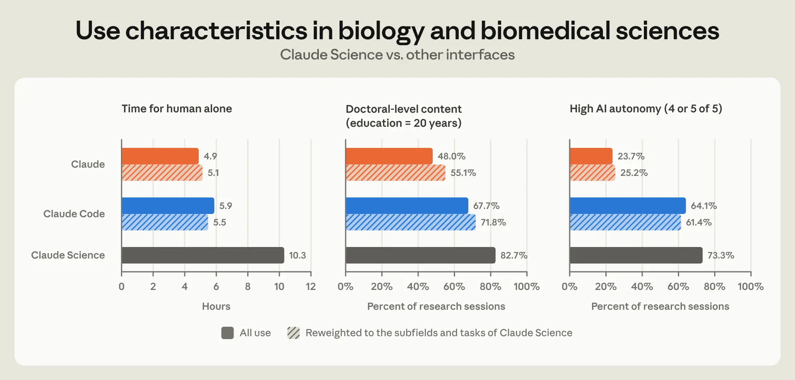
Use characteristics in biology and biomedical sciences. Comparing human task time, doctoral-level content, and level of autonomy for tasks completed on Claude, Claude Code, and Claude Science in biology and biomedical sciences. The hatched orange and blue bars reweight the subfields and tasks performed by Claude and Claude Code to match those performed by Claude Science. Outputs of Claude use. Finally, the artifacts produced with Claude show clear differences across fields (Figure 7).9 Written artifacts such as documents, reports, or academic papers are more common in the social sciences and humanities, relative to the natural and formal sciences. Conversely, technical artifacts such as code, software outputs, and data are more frequent in the natural and formal sciences. The health sciences overall are more similar to the social sciences in terms of artifacts produced. Technical artifacts are about twice as common on Claude Code as on Claude, but the broad pattern across fields is similar (see the Appendix).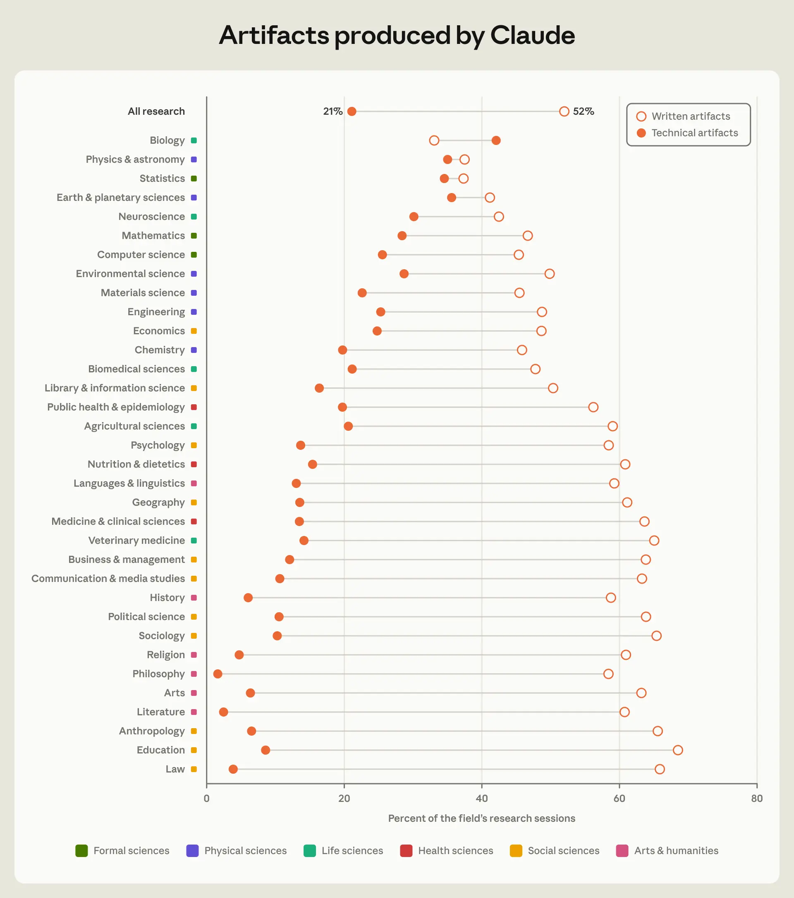
Artifacts produced by Claude. The share of sessions on Claude that produce written artifacts and technical artifacts by field. Fields are ordered by the difference between the share of written artifacts and technical artifacts.How use relates to capabilities
Does AI usage track AI capabilities? Field size explains some of the variation in Claude use, but not all of it. For example, researchers in computer science use Claude far more than the field’s size predicts, while those in nutrition use Claude far less. Similarly, where researchers spend their own time does not fully predict where they use Claude the most. Some broad task categories, such as data analysis and writing, have a much larger share of usage than of research time, while others, such as data gathering and ideation and hypothesis generation, have a much smaller share. Here, we test whether these differences in usage reflect what AI can actually do. To measure task-specific AI capabilities, we first construct capability scores using an LLM classifier. For each task, SciNet provides a list of individual steps that a scientist needs to perform to complete the task. For instance, in chemistry, one task involves purifying reaction mixtures, and one of that task’s steps involves packing a chromatography column. The classifier is shown pairs of steps across the taxonomy and asked which one AI can perform better. We aggregate these comparisons using a Bradley–Terry model—the same model behind the Elo ratings that rank chess players based on head-to-head results. A step’s score rises when it wins comparisons and falls when it loses them. We then average each task’s steps to obtain a task-level score (see the Appendix for details). We label this measure theoretical AI capability. We refer to a task’s specific score as its AI capability score. To compare usage across tasks, we ask whether Claude use is higher or lower for a task, relative to the time researchers spend on that task. For example, a task that takes 5% of researchers’ time but accounts for 10% of Claude sessions would represent twice as much use as expected, a ratio of 2. A ratio of 1 indicates that Claude use is in line with researcher time spent on the task. A ratio below 1 indicates that Claude is used less than expected based on the amount of researcher time the task takes. Figure 8 shows that this use ratio rises sharply with a task’s AI capability score. For tasks in the lowest 20% of capability scores, like purifying reaction mixtures and conducting participant observation, Claude is barely used. At median capability scores, the ratio is roughly 1, so usage is in line with researcher time. For tasks in the top 20% of capability scores, like visualizing data and applying statistical tests, usage is about twice as high on Claude and about four times as high on Claude Code, compared with the typical time researchers spend on those tasks. These patterns suggest that scientists’ use of Claude closely tracks AI capability scores. The steeper gradient for Claude Code reflects its focus on computational work, which has higher capability scores.
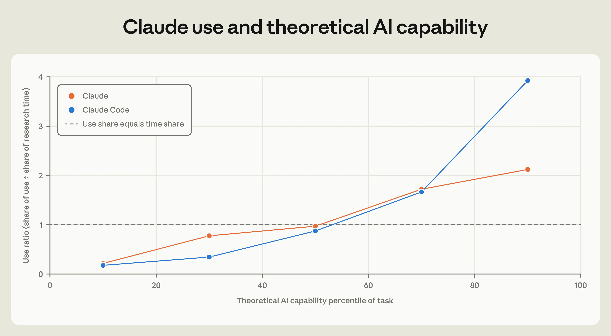
Claude use and theoretical AI capability. The vertical axis represents the use ratio for the tasks in each capability quintile, calculated as the share of research sessions devoted to those tasks divided by their share of research time estimated from SciNet. The horizontal axis represents the task’s AI capability score (percentile). The orange dots represent the average use ratio for tasks in each AI capability quintile for Claude; the blue dots represent the same for Claude Code. Theoretical AI capabilities can differ across tasks for many reasons. To understand these differences, we relate each task’s AI capability score to three groups of LLM-derived task characteristics: its suitability for reinforcement learning (RL); whether the work is predominantly cognitive, interpersonal, or physical; and whether regulatory restrictions limit AI use (Figure 9; see the Appendix for definitions and data sources). Consider RL suitability. In RL, an AI model tries a task repeatedly and is rewarded when it succeeds, allowing the model to learn how to perform that task. Tasks are particularly suitable for RL when success is easy to verify, when many examples can be simulated in a computing environment, and when feedback can be delivered quickly (Lambert et al. 2024; Guo et al. 2025). We use task-specific measures from SciNet for these three RL-related components and summarize them in a single index. A task’s capability score is highly correlated with its RL index score, which was classified separately (correlation of 0.78). This suggests that AI is most capable at the research tasks where RL is easiest to apply. Other important task characteristics concern the nature of the work. Some research tasks are fundamentally cognitive, while others require physical actions or interpersonal contact. Physical tasks in general are beyond the reach of purely cognitive machines. There can also be regulatory restrictions that limit AI use. AI capability scores are higher for tasks characterized by cognitive work (correlation of 0.69). By contrast, research tasks that involve more physical work have lower AI capability scores (−0.57). Scores also tend to be lower for research activities that include interpersonal work (−0.31) or that involve regulatory restrictions on AI use (−0.38).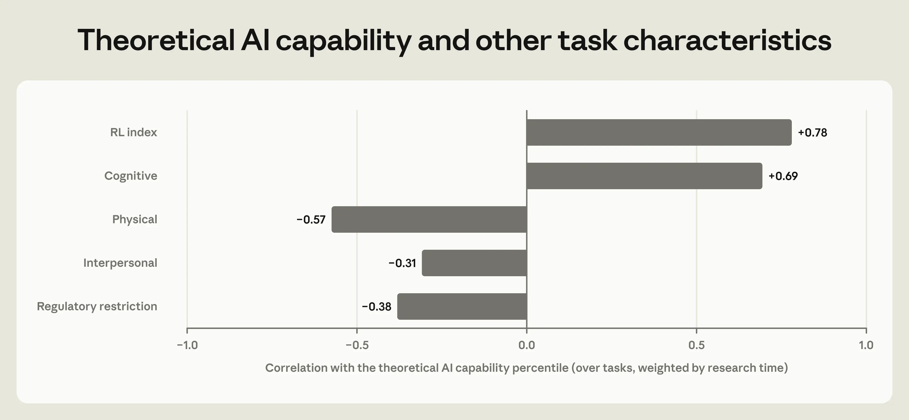
Theoretical AI capability and other task characteristics. Correlations between a research task’s AI capability score percentile and other characteristics of the task. The same task characteristics also predict how much researchers use Claude for a given task (Figure 10). Claude is barely used for tasks in the bottom fifth of RL suitability. For tasks in the top fifth, Claude use is disproportionately high relative to the time researchers spend on them: twice as high on Claude, and four times as high on Claude Code. This is similar to the association between Claude use and AI capability scores overall, where the top 20% of tasks also draw two to four times the expected use. Claude use is also disproportionately high in predominantly cognitive tasks. By contrast, Claude use is low for physical and interpersonal tasks. Claude use is also lower for tasks where regulatory barriers limit AI assistance. Overall, across the spectrum of highly specialized research tasks, usage and capability measures are strongly related.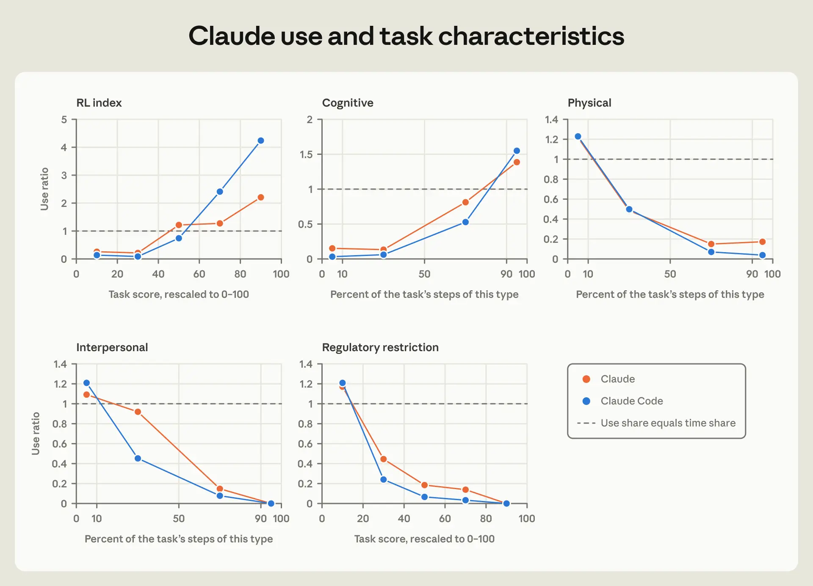
Claude use and task characteristics. Each panel considers a different task characteristic. The vertical axes represent the use ratio for groups of tasks (“bins”) with different scores on that characteristic. The horizontal axes represent a measure of the characteristic’s intensity. Orange dots represent the average use ratio for tasks in each bin on Claude; blue dots represent the same for Claude Code. Dots at zero represent bins hidden for privacy because too few accounts are responsible for that use. Different scientific fields rely on different mixes of research activities. Does the correlation between usage and capability scores for narrow research tasks help explain why some fields use Claude more than others? Our data shows it does: a subfield’s Claude use per researcher tends to rise with the average AI capability score across its tasks (correlations of 0.45 for Claude and 0.57 for Claude Code), as shown in Figure 11. There is also substantial variation across domains, which suggests that Claude use is affected by factors beyond what AI can do. Health sciences researchers use Claude relatively little compared with the AI capability scores of their tasks, possibly because regulation of medical data and research limits the use of AI or makes it harder to integrate. Researchers in the formal sciences, social sciences, and the arts and humanities use Claude more than the AI capability scores would predict. Much of the work in these fields is done through text and code, which likely facilitates the adoption of AI tools. Claude use in the physical sciences and life sciences generally tracks AI capability scores more closely, though individual subfields can deviate.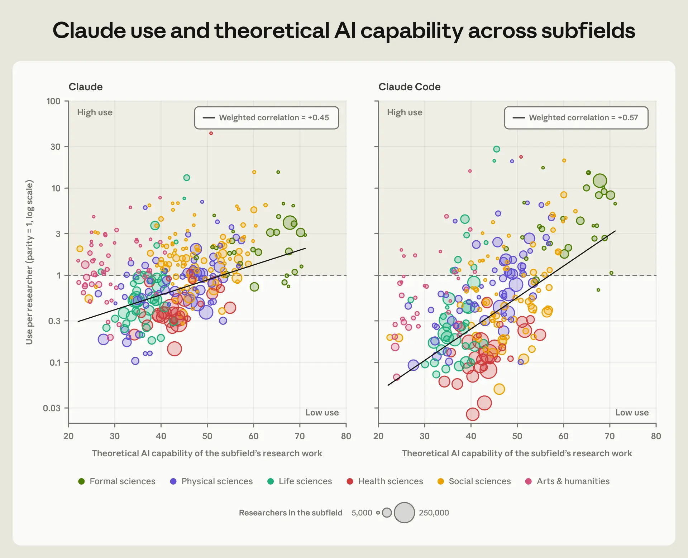
Claude use and theoretical AI capability across subfields. Both panels show each subfield as a dot, sized by the number of researchers in the subfield. The vertical axis shows usage per researcher on a log scale. Usage per researcher is computed as the subfield’s share of research sessions divided by the subfield’s share of total researchers. The horizontal axis shows the subfield’s AI capability score, computed by aggregating across all of the subfield’s research tasks weighted by researcher hours. The black line shows the best fit, and each panel reports the correlation weighted by subfield size. The left panel shows the results for research sessions on Claude; the right panel shows the results for research sessions on Claude Code. Theoretical AI capability also predicts how much researchers allow Claude to work autonomously. Figure 12 shows that autonomous use correlates with the theoretical AI capability of the subfield. In other words, not only do subfields with more theoretical AI capability use AI more, but they also use it in a more autonomous manner.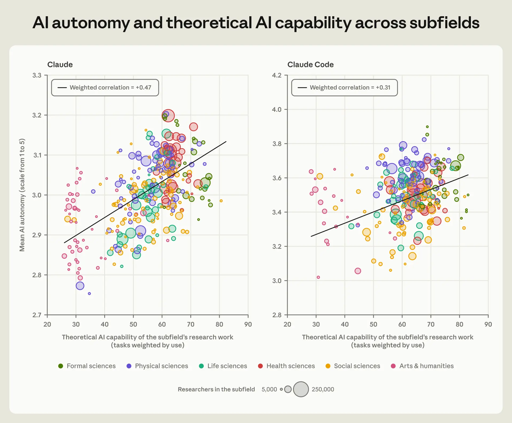
AI autonomy and theoretical AI capability across subfields. Both panels show each subfield as a dot, sized by the number of researchers in the subfield. The left panel represents research sessions on Claude; the right panel represents research sessions on Claude Code. The vertical axis shows the mean autonomy score for sessions in the subfield, weighted by session volume. The horizontal axis shows the mean theoretical capability of the subfield’s tasks, also weighted by usage. Tasks that are not covered by any session are excluded from the analysis, since they cannot be scored on autonomy. For legibility, outlier subfields have been dropped, but they are included in the line of best fit and the correlation calculation. Correlations are weighted by subfield size.Research acceleration scenarios with AI
The pace of scientific and technological progress depends on good ideas and the means to pursue them. Historically, both have been limited by human capacity. There are only so many researchers, and each has only so much time to formulate a hypothesis, design the right tests, run the analyses, and synthesize the findings. AI could ease these constraints in two ways. First, it could take on work that researchers now do, allowing them to pursue more ideas. Second, it could contribute ideas that researchers might not otherwise identify. The second may ultimately matter most, but it is much harder to measure, so our analysis focuses on the first.
Approach
We consider three scenarios of scientific acceleration through AI. Scenario 1 assumes wide adoption of current AI capabilities, as estimated from our survey and the AI capability scores. Scenarios 2 and 3 are hypothetical futures in which AI fully automates 75% or 100% of non-physical research steps—the individual actions that make up each research task in SciNet—starting with the steps that have the highest AI capability scores. In all three scenarios, researchers continue to perform physical steps. These are illustrative scenarios, not forecasts. They show how physical work, theoretical AI capability, and the cost of AI could shape the acceleration of scientific research, and which fields could accelerate the most.
For each scenario, we report two measures. The first is the AI share : the fraction of researcher time spent on a study that AI could take on. Given how researchers currently allocate their time, it measures how much human research time AI could free up, and it follows directly from our analyses above. Researchers can redirect that freed-up time to other work, increasing research output. Our second measure, the acceleration , estimates this gain: the increase in research output for a fixed research budget, relative to the research output without AI. It tells us how many more research results the same budget could produce. Freed-up time does not translate one-for-one into more output, both because researchers redirect their effort toward the tasks where AI helps less, and because AI itself has costs.
We build the AI share for Scenario 1 from our survey, which records five levels of AI use: none, assistive, shared, delegated, and autonomous. We assume these levels correspond to AI taking on 0%, 25%, 50%, 75%, and 100% of a researcher’s time for a given task step. Within each task category, we rank task steps by AI capability score. We then assign a level of AI use to each task step, in the same proportions reported in our survey, with the highest levels going to the highest-scoring steps. For ideation and hypothesis generation, for example, 17% of responses report no AI use, and 53% report assistive use. The 17% of ideation task steps with the lowest AI capability scores are therefore assigned no AI share, the next 53% are assigned 25%, and so on up the scale. Because respondents are likely to be heavy AI adopters, we treat their reported use as a proxy for what AI can do today. Finally, we aggregate researcher time freed up by AI from steps to fields (see the Appendix).
To compute the acceleration, we use an ideas production function, a standard economic model of how research inputs, such as researcher time, are turned into research outputs. In this model, a paper requires many research tasks (Jones 2026). The tasks are complementary, such that strength in one cannot fully make up for weakness in another. As AI makes some tasks cheaper, researchers shift their effort toward tasks where AI helps less, thereby easing the bottlenecks that limit the overall gain. For example, researchers could spend more time coming up with new questions or running more physical experiments to expand empirical evidence. We calibrate how much these bottlenecks limit the overall gain using Ahmadpoor and Jones (2019). For AI’s cost, we assume that an hour of AI agent time costs $30, compared with $95 for an hour of a researcher’s time, and that AI runs for 0.2 hours for each researcher hour it saves. These are illustrative assumptions: the AI cost uses today’s public list prices. The smaller these costs, the more research can be done within a given budget and the larger the acceleration, as we discuss below. The Appendix describes the model and assumptions.
![Two-panel dot plot of 34 fields under three scenarios: current AI, 75% of non-physical steps automated, and all non-physical steps automated. Left: percentage of research time freed through AI, which ranges from about 27% to 52% under current AI, with statistics and computer science highest and the arts and anthropology lowest. Right: research output relative to research without AI, on a log scale. Under current AI, acceleration ranges from about 1.35x to 2x. With all non-physical steps automated, statistics, computer science, and most social sciences reach about 15x, while bench sciences such as biology, chemistry, biomedical sciences, and materials science stay near 3–4x.](../assets/how-researchers-use-claude/img_013.webp) Research time freed up by AI and research acceleration. Every row is a field. The left panel shows fields ranked by the estimated share of researcher time that AI could take on. Circles show estimates for current capabilities; diamonds show the estimated share of time freed up if 75% of non-physical steps are automated; triangles show the estimated share of time freed up if 100% of non-physical steps are automated. The right panel shows the research acceleration given the research budget of a field. Its horizontal axis shows research output with AI as a multiple of the output without AI (1x = no change) under our three scenarios.
Research time freed up by AI and research acceleration. Every row is a field. The left panel shows fields ranked by the estimated share of researcher time that AI could take on. Circles show estimates for current capabilities; diamonds show the estimated share of time freed up if 75% of non-physical steps are automated; triangles show the estimated share of time freed up if 100% of non-physical steps are automated. The right panel shows the research acceleration given the research budget of a field. Its horizontal axis shows research output with AI as a multiple of the output without AI (1x = no change) under our three scenarios.
Scenario 1: Current capabilities
With current capabilities, if adopted widely, AI could take on 27–52% of the researcher time needed to produce a new study, with a median of 38% across fields (Figure 13, left panel). These shares imply research accelerations ranging from 1.35x in the arts, 1.36x in anthropology, and 1.41x in chemistry to 1.96x in computer science and 2.02x in statistics (Figure 13, right panel). Accelerations remain limited because AI work today is mostly assistive or shared rather than autonomous, so researchers still spend substantial time on nearly every step. Even the most AI-ready fields, whose work is almost entirely cognitive, reach only about a 2x acceleration. These estimates assume that AI diffuses widely and that researchers apply it to every step where it is useful today. Two factors explain most of the differences across fields. The first is physical work, which AI cannot take on without physical integrations. In lab and field sciences such as the agricultural sciences, biomedical sciences, chemistry, and materials science, 38–41% of researcher time goes to physical steps, compared with 4% in the median field. The physical share alone explains about one-third of the variation in the AI share. The second factor is the distribution of AI capability scores within cognitive work. The arts and history spend little time on physical steps (10% and 4%, respectively), yet their cognitive steps have low AI capability scores, perhaps because qualitative and interpretive work is less amenable to reinforcement learning. Computer science and statistics, by contrast, have high scores and large AI shares, driven by data analysis, the type of work with the highest AI capability scores across fields. Fields with a higher use ratio on Claude also tend to have larger AI shares (Figure 14). The AI share is calculated without any Claude use data, so this relationship is further evidence that AI use tracks theoretical AI capability.
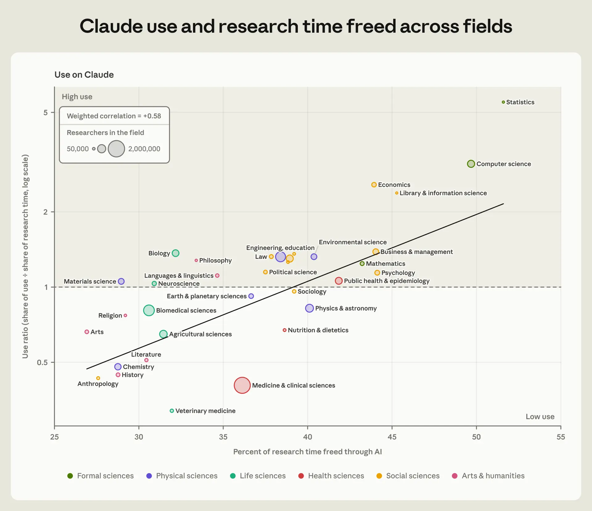
Claude use and research time freed up by AI across fields. The correlation between observed Claude use and the AI share for each field. Each field is a dot, sized by the number of researchers. The vertical axis shows the field’s use ratio on Claude, on a log scale. The horizontal axis shows the estimated share of human research time that could be completed by AI with current capabilities.Scenarios 2 and 3: Greater automation
In these more speculative scenarios, which depend heavily on assumptions about AI’s reach and costs, greater automation raises both the AI share and the acceleration sharply, and widens the differences between fields. In Scenario 2, where 75% of non-physical steps can be done by AI, accelerations reach about 8x in computer science, 7x in statistics and library and information science, and 6x in economics. Most other social sciences, mathematics, and physics and astronomy reach 4–5x, while bench and medical sciences reach about 2–3x. The bench sciences and the arts and humanities gain the least, but for different reasons. In the bench sciences, much of the work is physical and must still be done by researchers. In the arts and humanities, the work is mostly cognitive but has low AI capability scores, so few of its steps are among those automated. Automated steps make up 82% of non-physical researcher time in computer science but only 28% in the arts. History, anthropology, and the arts accelerate by about 2x or less. In Scenario 3, the arts and humanities pull ahead, while the bench sciences remain held back. Once AI automates all non-physical steps, low AI capability scores no longer limit cognitive work, and AI can take on nearly all research work in many fields (Figure 13, left panel). In this speculative scenario, fields with few physical tasks, including statistics, computer science, economics, mathematics, psychology, and most of the social sciences and the arts and humanities, reach about 15–16x. Fields with substantial lab or field work, such as biology, chemistry, materials science, agricultural sciences, and biomedical sciences, reach only 3–4x. Absent automated labs, their physical steps, representing about 40% of researcher time, remain the bottleneck. Two lessons follow from these scenarios. First, physical bottlenecks remain powerful. Steps that AI cannot perform without physical integrations come to dominate researcher time and budgets, capping acceleration. Second, where no such bottlenecks exist, extraordinary rates of progress become possible, and AI’s cost becomes the limit. Under our assumptions, a task that is fully automated by AI still costs about one-sixteenth of what it would cost a researcher to perform, so accelerations approach about 16x and stop there. Lower AI costs would raise this ceiling proportionately, such that halving the cost of AI, for example, would double the rate of progress. If costs fall sharply, including for harder tasks that AI automates later, the fields without physical bottlenecks could accelerate far beyond these estimates. These calculations have important limits that cut in both directions. We do not consider constraints at the level of a field rather than a research team. For instance, only so many experiments can run at facilities like the Large Hadron Collider. We also count only the cost of researcher and AI time, not the costs of machinery or inputs for experiments, which can be substantial in the health, physical, and life sciences. Nor do we consider simulations to replace physical experiments, which could ease bottlenecks in some fields. Finally, we do not consider the quality of ideas. If AI identifies better hypotheses with higher chances of success, research could accelerate further; if research taste remains uniquely human, the acceleration would be slower.
Researcher expectations
The scenarios above characterize a range of possibilities. Researchers’ own expectations can provide a unique guide grounded in expertise. To gather their viewpoints, our survey of researchers in the life and health sciences asked when they thought AI, working on its own, would match the best researchers in their field for different categories of research work (Figure 15). Respondents’ expectations are high in the near term: over half expect AI to match top researchers at data analysis by 2027, and 38% say that AI has already reached this level. By 2030, 94% expect AI will match the best researchers in data analysis, 89% in writing, and 72% each in ideation and data gathering. Expectations for ideation and data gathering are lower, consistent with the lower use of Claude for these tasks today. Expectations for end-to-end AI research without humans in the loop are more conservative, but researchers still expect remarkable progress. About 40% of respondents expect AI to carry out full research projects by 2030, and about 64% by 2035, although 16% say it will never happen. Expectations that AI will autonomously produce scientific breakthroughs are more cautious still, with approximately half of researchers expecting this to occur only after 2035, if ever. Overall, many researchers expect high levels of automation in the next decade, broadly in line with our greater automation scenarios. How fast and to what extent these expectations materialize will depend not only on advances in AI as a software technology, but also on efforts to build automated labs that overcome physical barriers. Comparing past survey evidence to realized outcomes suggests that AI progress has often been dramatically underestimated (Rosenberg et al. 2026). In a survey in mid-2022, for example, the median estimate for AI achieving gold-level performance in the International Mathematical Olympiad was 2030 among domain experts and 2035 among superforecasters (Karger et al. 2023). AI achieved this milestone in 2025, some five to 10 years ahead of those predictions. While forecasters have systematically underestimated progress in AI capabilities, there are a few exceptions, primarily in domains that require execution in the physical world, such as AI-assisted laboratory tasks in biology.
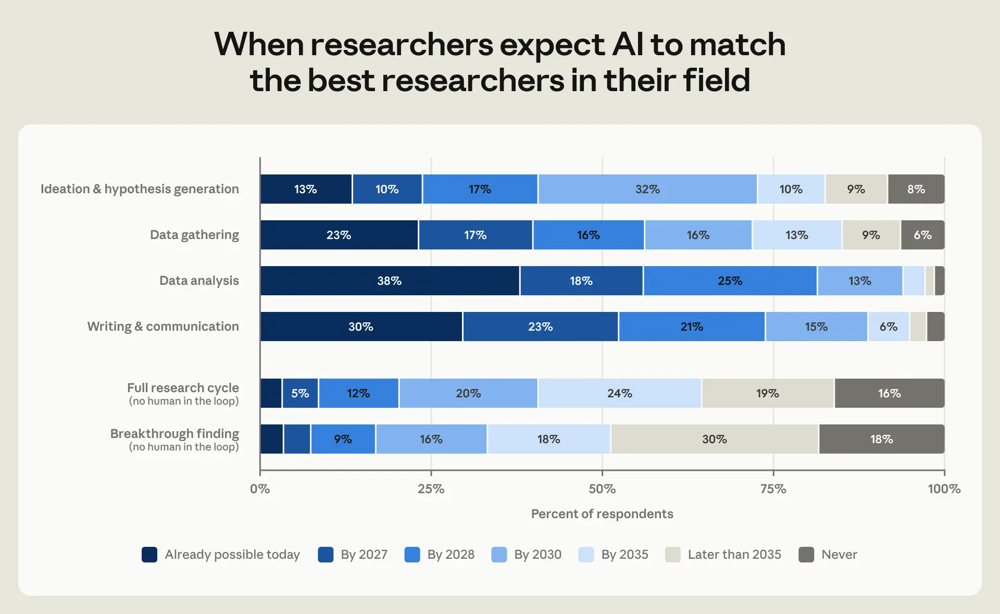
When researchers expect AI to match the best researchers in their field. Results come from our own survey. The top four rows correspond to when researchers expect AI, working on its own, to match the best researchers in their field in different task categories. The bottom two rows correspond to when researchers expect AI, without a human scientist in the loop, to go “from question to finding” and to produce “a finding your field would regard as a major advance” in their respective fields.Discussion
If AI helps speed up scientific discovery, it could contribute to higher standards of living and faster progress in treating disease. Our estimates suggest the potential gains are substantial. But advancements in AI’s research capabilities do not automatically translate into rapid progress; achieving such acceleration will also depend on how we respond to several constraints. First, adoption can substantially lag capabilities. Diffusion of new technologies is typically slow (Comin and Hobijn 2010), and productivity gains tend to materialize only after organizations restructure around them (David 1990; Brynjolfsson, Rock, and Syverson 2021). Individual learning processes, friction at the organizational or system level, and constraints on AI access or infrastructure can all slow adoption. Second, research may continue to face bottlenecks that AI does not remove. Physical experimentation, which can be costly and slow, can substantially limit progress even with extremely capable AI. We see this especially in the bench sciences in the scenarios above. Choosing what to study may be another bottleneck. Research questions largely determine a research project’s value, and AI’s capacity to generate good questions remains unclear. If ideation is a bottleneck, it will limit acceleration even as answering a given question becomes much cheaper. Conversely, if AI outstrips humans in formulating high-quality hypotheses, acceleration could be more substantial, especially in domains where testing hypotheses is costly. Third, AI-enabled research could raise the quantity or quality of research output, with different implications for science. A surge in new research papers could advance a field faster but also overwhelm scientists’ capacity to absorb or verify the results. On the other hand, new technologies, from microscopes and telescopes to statistical software, have historically raised the quality of scientific insights, and AI can likewise make more comprehensive analyses and more ambitious projects feasible. And as papers become easier to produce, the research community may increasingly reward work that is especially novel or high quality. Whether more efficient research leads to greater quantity or greater quality will depend on researchers’ choices and the incentives set by journals, funders, and institutions. Fourth, the way research is organized may change in ways that are hard to anticipate. As AI becomes more capable and autonomous, AI systems could take the lead in verification, refereeing, and communicating important results, which would ease the absorption problem discussed above. Further in the future, AI research agents might also push the frontiers of science in large communities of their own, independently of humans, using robotics and automated labs. Such autonomous AI research would raise questions about how humans keep track of new knowledge, whether they can understand it, and how it is generated. Fifth, more autonomous AI systems may increase the challenge of ensuring that AI-driven research remains aligned with human goals. Keeping humans involved in key research decisions, such as which questions to pursue and how to pursue them, may matter for safety and human wellbeing as AI agents become more powerful and creative. Discoveries themselves, or the byproducts of research, can also carry risks, particularly in biology, where the same capabilities that speed up medical advances could also produce dangerous knowledge or materials. In such cases, deliberate checkpoints in the research process may be warranted, requiring us to accept slower progress to reduce risk. Finally, the work that researchers undertake may change substantially. One effect may be a change in researchers’ job satisfaction. If AI takes over enjoyable or rewarding tasks, satisfaction may fall and fewer people may choose research careers. If AI instead takes over tasks that researchers find tedious, satisfaction may rise. Administrative work is one potential target. In the US, principal investigators on federally funded projects report spending about 44% of their research time meeting administrative requirements rather than doing research (Schneider et al. 2020), and easing this burden could be a large boon, saving time and improving overall satisfaction. Ultimately, the net effect is uncertain and may change as AI’s capabilities evolve. An optimistic view is that AI will expand opportunities for discovery, which is core to what makes research careers rewarding. If science is a voyage into the “endless frontier,” AI may be a new vessel, allowing researchers to travel farther across a vast expanse of research questions and discoveries.
Appendix
References
Ahmadpoor, Mohammad and Benjamin F. Jones, “Decoding Team and Individual Impact in Science and Invention,” Proceedings of the National Academy of Sciences , 2019, 116 (28), 13885–13890. Alamos, Cristian and Lukas Althoff, “SciNet: The Anatomy of Science,” dataset, 2026. https://www.anatomyofscience.com/ Amodei, Dario, “Machines of Loving Grace: How AI Could Transform the World for the Better,” essay, October 2024. https://darioamodei.com/essay/machines-of-loving-grace Anthropic, “Learning More about Claude’s Mathematical Capabilities,” research post, August 10, 2026a. https://www.anthropic.com/research/riemann-zeta Anthropic, “Formalizing Fermat’s Last Theorem,” research post, September 4, 2026b. https://www.anthropic.com/research/formalizing-fermats-last-theorem Appel, Ruth et al., “Anthropic Economic Index Report: Economic Primitives,” research post, January 15, 2026. https://www.anthropic.com/research/anthropic-economic-index-january-2026-report Brynjolfsson, Erik, Daniel Rock, and Chad Syverson, “The Productivity J-Curve: How Intangibles Complement General Purpose Technologies,” American Economic Journal: Macroeconomics , 2021, 13 (1), 333–372. Bush, Vannevar, Science, the Endless Frontier: A Report to the President , Washington, DC: United States Government Printing Office, 1945. Codreanu, Mihai et al., “AI in Science: Early Insights,” arXiv preprint arXiv:2609.28504, 2026. https://arxiv.org/abs/2609.28504 Comin, Diego and Bart Hobijn, “An Exploration of Technology Diffusion,” American Economic Review , 2010, 100 (5), 2031–2059. David, Paul A., “The Dynamo and the Computer: An Historical Perspective on the Modern Productivity Paradox,” American Economic Review , 1990, 80 (2), 355–361. Eloundou, Tyna et al., “GPTs Are GPTs: Labor Market Impact Potential of LLMs,” Science , 2024, 384 (6702), 1306–1308. Guo, Daya et al., “DeepSeek-R1 Incentivizes Reasoning in LLMs through Reinforcement Learning,” Nature , 2025, 645 (8081), 633–638. Hao, Qianyue et al., “Artificial Intelligence Tools Expand Scientists’ Impact but Contract Science’s Focus,” Nature , 2026, 649 (8099), 1237–1243. Jones, Benjamin F., “Artificial Intelligence in Research and Development,” in Ajay Agrawal, Erik Brynjolfsson, and Anton Korinek, eds., The Economics of Transformative AI , Chicago: University of Chicago Press, 2026, 37–61. Jumper, John et al., “Highly Accurate Protein Structure Prediction with AlphaFold,” Nature , 2021, 596 (7873), 583–589. Karger, Ezra et al., “Forecasting Existential Risks: Evidence from a Long-Run Forecasting Tournament,” Forecasting Research Institute Working Paper 1, 2023. https://forecastingresearch.org/research/existential-risk-persuasion-tournament Kobak, Dmitry et al., “Delving into LLM-Assisted Writing in Biomedical Publications through Excess Vocabulary,” Science Advances , 2025, 11 (27), eadt3813. Lambert, Nathan et al., “Tülu 3: Pushing Frontiers in Open Language Model Post-Training,” arXiv preprint arXiv:2411.15124, 2024. https://arxiv.org/abs/2411.15124 Liang, Weixin et al., “Quantifying Large Language Model Usage in Scientific Papers,” Nature Human Behaviour , 2025, 9 (12), 2599–2609. Liu, Yinhong et al., “Aligning with Human Judgement: The Role of Pairwise Preference in Large Language Model Evaluators,” in Proceedings of the First Conference on Language Modeling (COLM) , 2024. Mantiuk, Rafał K., Anna Tomaszewska, and Radosław Mantiuk, “Comparison of Four Subjective Methods for Image Quality Assessment,” Computer Graphics Forum , 2012, 31 (8), 2478–2491. Massenkoff, Maxim et al., “Anthropic Economic Index Report: Cadences,” research post, June 26, 2026. https://www.anthropic.com/research/economic-index-june-2026-report Merchant, Amil et al., “Scaling Deep Learning for Materials Discovery,” Nature , 2023, 624 (7990), 80–85. OpenAI, “An OpenAI Model Has Disproved a Central Conjecture in Discrete Geometry,” research post, May 20, 2026a. https://openai.com/index/model-disproves-discrete-geometry-conjecture/ OpenAI, “On the Navier–Stokes Millennium Prize Problem,” research post, September 8, 2026b. https://openai.com/index/navier-stokes-solution/ Parshall, Daniel and Andrea Lopez-Luzuriaga, “Measuring AI’s Economic Reach: A Multi-Dimensional Task Taxonomy,” George Washington University Center for Economic Research Working Paper 2026-005, 2026. https://www2.gwu.edu/~forcpgm/2026-005.pdf Robinson-Garcia, Nicolas et al., “Meta-Research: Task Specialization Across Research Careers,” eLife , 2020, 9, e60586. Rosenberg, Josh et al., “How Accurate Have AI Progress Forecasts Been So Far?” research post, Forecasting Research Institute, September 22, 2026. https://forecastingresearch.org/research/ai-progress-accuracy-update Schneider, Sandra L. et al., “2018 FDP Faculty Workload Survey: Report of Primary Findings,” Federal Demonstration Partnership, 2020. https://thefdp.org/wp-content/uploads/FDP-FWS-2018-Primary-Report.pdf Shah, Nihar B. et al., “When Is It Better to Compare than to Score?” arXiv preprint arXiv:1406.6618, 2014. https://arxiv.org/abs/1406.6618 Tomei, Philip Moreira and Bouke Klein Teeselink, “What Jobs Can AI Learn? Measuring Exposure by Reinforcement Learning,” arXiv preprint arXiv:2605.02598, 2026. https://arxiv.org/abs/2605.02598 Tsoukalas, George et al., “Advancing Mathematics Research with AI-Driven Formal Proof Search,” Science , 2026, 394 (6820), 234–239. Varadi, Mihaly et al., “AlphaFold Protein Structure Database in 2024: Providing Structure Coverage for over 214 Million Protein Sequences,” Nucleic Acids Research , 2024, 52 (D1), D368–D375. Wang, Hanchen et al., “Scientific Discovery in the Age of Artificial Intelligence,” Nature , 2023, 620 (7972), 47–60.
Footnotes
01We exclude countries in which Claude is not available when calculating the number of global researchers in each field. 02We obtain researcher counts from SciNet. For details on the measure, see the Appendix. 03Transcripts are assigned to fields by the research being pursued rather than the tools used, so coding work in other computational sciences is not counted as computer science. 04Subfield-level usage shares are estimated less precisely than field-level shares, particularly for subfields with lower session volume, because of greater sampling variation and classification noise. We therefore focus on broad patterns rather than the position of any individual low-volume subfield. 05While our analysis focuses on research tasks, non-research tasks such as teaching, service, and administration can take up a substantial share of researchers’ time budget. However, our scientific usage classifier intentionally leaves aside undergraduate teaching and does not select administrative or routine work if it is not serving research or a study directly. Furthermore, our sample is not restricted to scientists in academic positions, who naturally have higher teaching and service workloads. We therefore leave the study of AI use in these workflows to future research. 06In terms of individual tasks, drafting manuscripts is the most frequent task on both Claude (18.6%) and Claude Code (11.1%). On Claude, the next most frequent tasks are reviewing and synthesizing literature (6.8%) and responding to peer reviewer comments (6.7%). On Claude Code, they are designing, building, and refining artifacts (4.8%) and visualizing data and results (4.6%). 07Respondents were recruited from applicants to Anthropic’s AI for Science and related grant programs and are affiliated with research institutions in the US and Canada. Because they applied for AI research credits, they are likely more intensive AI users than the typical scientist. See the Appendix for details. 08The differences in tasks performed on Claude Science may partly reflect who uses it. Any paid user can access Claude Science, but adopters are likely those with more specialized or demanding use cases. We therefore describe the differences across products as patterns of use. 09To identify artifacts for each Claude session, we use a classifier introduced in our prior work (Massenkoff et al. 2026). The classifier identifies the most prominent output Claude produced in the exchange. We categorize the more granular responses into two buckets: written artifacts and technical artifacts. Written artifacts primarily include documents, reports, academic papers, or presentations. Technical artifacts primarily include software output, such as scripts, code fixes, and data and charts. Artifacts that are not written or technical artifacts include analyses or summaries and explanations or advice.
Authors & acknowledgements
Acknowledgements
Cristian Alamos, Bailey Bova, Tom Chivers, Lauren Cottrell, Eleanor Dorfman, Adam Farina, Deep Ganguli, Rebecca Hiscott, Chad Jones, Anneke Jong, Aisling Keenan, Anton Korinek, Eva Lyubich, Paruul Maheshwary, Miles McCain, Teddy McGuire, Ankur Rathi, Santi Ruiz, Szymon Sacher, David Saunders, Monika Tuchowska, Nick Turner, Heather Whitney, Kim Withee, Jack Clark.
Citation
@techreport{hermle2026AIScience,
author = {Hermle, Johannes and Jones, Benjamin and Althoff, Lukas and Heller, Ryan and Lyttelton, Thomas and Stein, Carolyn and Wilmers, Nathan and Massenkoff, Maxim and McCrory, Peter},
title = {{AI} for scientific discovery: How researchers use {Claude}},
institution = {The Anthropic Institute},
type = {Technical Report},
year = {2026},
month = nov,
url = {https://www.anthropic.com/research/how-researchers-use-claude}
}